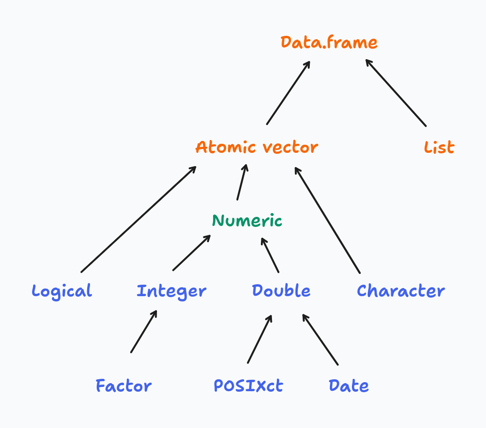
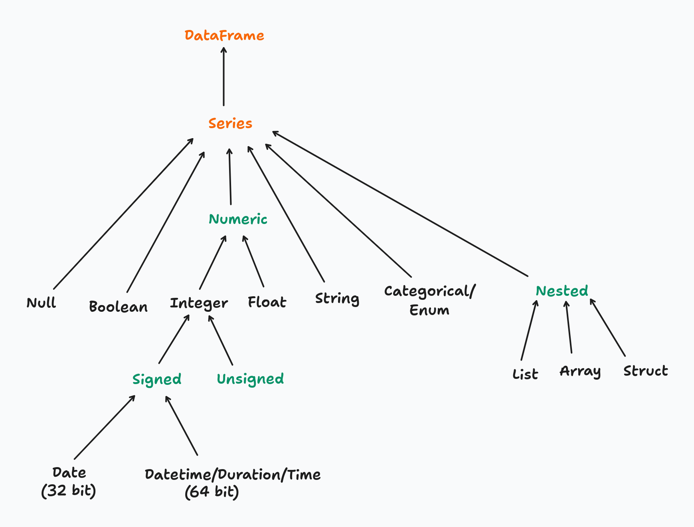

full_flights = pl.read_csv('./data/On_Time_Reporting_Carrier_On_Time_Performance_(1987_present)_2022_1.csv')
full_flights.shape(537902, 110)All examples in this chapter use a real-world dataset of approximately 530,000 US domestic flights from January 2022.
full_flights = pl.read_csv('./data/On_Time_Reporting_Carrier_On_Time_Performance_(1987_present)_2022_1.csv')
full_flights.shape(537902, 110)full_flights.estimated_size('mb')240.02948379516602The way R and Polars handle types reflects a fundamental design difference: R prioritises convenience through implicit coercion, while Polars prioritises correctness through explicit conversion.
R’s type system is built around four atomic vector types — logical, integer, double, and character — arranged in a coercion hierarchy:

When you combine values of mixed types, R silently promotes them up the hierarchy to find a common type:
# R coerces everything to the "highest" type in the hierarchy
x <- c(TRUE, 1L, 2.5)
typeof(x) # "double" — logical and integer were silently promoted
y <- c(TRUE, 1L, 2.5, "text")
typeof(y) # "character" — everything coerced to stringThis makes interactive exploration forgiving — R rarely stops you with a type error. The cost is that type mismatches surface as subtly wrong results rather than loud errors, which makes bugs hard to trace in larger codebases.
Polars has a much richer type system — granular numeric types (Int8 through Int64, UInt8 through UInt64, Float32, Float64), dedicated temporal types, nested types, and more:

Polars never coerces silently. Every type change must be declared explicitly with .cast(). You can inspect the current type of a column before acting on it:
full_flights['Year'].dtypeInt64To convert the Year column from integer to string:
full_flights = full_flights.with_columns(
pl.col('Year').cast(pl.String)
)
full_flights['Year'].dtypeStringIf .cast() cannot perform the conversion safely (e.g. casting "abc" to Int64), Polars raises an error immediately rather than producing a null or a wrong value — unless you explicitly opt in to lenient casting with strict=False.
The tradeoff is intentional: explicit casting is more verbose, but type contracts are visible in the code and mistakes fail loudly at the point of conversion. For production pipelines processing millions of rows, catching a type mismatch early is far cheaper than diagnosing a silently incorrect result downstream.
In Python, a method is a function that belongs to an object and is invoked using dot notation: object.method(). The object provides both the data and the set of operations available on it.
The distinction from a standalone function comes down to ownership:
# standalone functions — data is passed as an argument
len(full_flights)
pl.read_csv('./data/flights.csv')
# methods — the object is the implicit first argument
full_flights.shape
full_flights.head()
full_flights.filter(pl.col('OriginStateName') == 'Ohio')A method always has implicit access to the object it belongs to. A DataFrame method like .filter() knows it is operating on a DataFrame; a Series method like .mean() knows it is operating on a Series. This means methods are type-specific — .filter() exists on a DataFrame but not on a Series.
R’s tidyverse follows a function-first style: data is passed as the first argument to a verb, and the pipe operator chains those verbs into a pipeline:
# R / dplyr: functions act on data passed as an argument
full_flights |>
filter(OriginStateName == 'Ohio') |>
select(FlightDate, Origin, Dest)Python/Polars follows a method chaining style: the data object comes first, and methods are applied sequentially via the dot operator:
(
full_flights
.filter(pl.col('OriginStateName') == 'Ohio')
.select(['FlightDate', 'Origin', 'Dest'])
)The two patterns are structurally equivalent — both read as a left-to-right pipeline of transformations. The key difference is where the data lives: in R, data flows through functions as an argument; in Python, data is the object and methods are behaviors it carries with it.
One practical consequence of this is that in R, filter() works on any compatible object — data frames, tibbles, grouped tibbles. In Python, each type exposes its own set of methods, so you need to be aware of what type you are working with at each step of the chain.
Filtering rows in Polars maps directly to dplyr’s filter(). The function name is the same; the main syntax difference is that Polars requires column references to be wrapped in pl.col().
# dplyr
flights_from_ohio <- full_flights |> filter(OriginStateName == "Ohio")flights_from_ohio = full_flights.filter(pl.col('OriginStateName') == 'Ohio')
flights_from_ohio.shape(7434, 110)# dplyr — comma-separated predicates are implicitly AND-ed
flights_from_ohio_to_virginia <- full_flights |>
filter(OriginStateName == "Ohio", DestStateName == "Virginia")# note that each predicate must be enclosed within parentheses when using &
flights_from_ohio_to_virginia = full_flights.filter(
(pl.col('OriginStateName') == 'Ohio') & (pl.col('DestStateName') == 'Virginia')
)
# comma-separated predicates are also AND-ed, avoiding the need for parentheses
# flights_from_ohio_to_virginia = full_flights.filter(
# pl.col('OriginStateName') == 'Ohio',
# pl.col('DestStateName') == 'Virginia'
# )
flights_from_ohio_to_virginia.shape(564, 110)# dplyr
flights_from_ohio_except_virginia <- full_flights |>
filter(OriginStateName == "Ohio", DestStateName != "Virginia")flights_from_ohio_except_virginia = full_flights.filter(
pl.col('OriginStateName') == 'Ohio',
~(pl.col('DestStateName') == 'Virginia')
)
flights_from_ohio_except_virginia.shape(6870, 110).is_in(), the equivalent of R’s %in% operator:# dplyr
major_hubs <- full_flights |>
filter(OriginStateName %in% c("California", "Texas", "New York"))major_hubs = full_flights.filter(
pl.col('OriginStateName').is_in(['California', 'Texas', 'New York'])
)
major_hubs.shape(143765, 110).filter() over boolean indexing (df[df['col'] == value])? .filter() integrates with Polars’ lazy execution engine: when used with scan_csv() or scan_parquet(), the predicate is pushed down to the file scan so only qualifying rows are ever read from disk. Boolean indexing always loads the full dataset first. See the Lazy API chapter for a detailed benchmark.Polars offers three levels of column selection, progressing from explicit to declarative:
pl.col(dtype) selects all columns of a given typepolars.selectors) — a high-level API for flexible, composable selection based on types, name patterns, or propertiesSelectors are the recommended approach for anything beyond a simple name list. They produce code that reads closer to intent, composes naturally with set operations, and adapts automatically when the schema changes.
# dplyr
full_flights |> select(FlightDate, Tail_Number)full_flights.select(['FlightDate', 'Tail_Number']).head(3)| FlightDate | Tail_Number |
|---|---|
| str | str |
| "2022-01-14" | "N119HQ" |
| "2022-01-15" | "N122HQ" |
| "2022-01-16" | "N412YX" |
pl.col(dtype) selects all columns that match a given type. Useful for applying the same transformation to every column of a type:
# dplyr
full_flights |> select(where(is.double))
full_flights |> select(where(is.integer))full_flights.select(pl.col(pl.Float64)).head(3)| DepDelay | DepDelayMinutes | DepDel15 | TaxiOut | TaxiIn | ArrDelay | ArrDelayMinutes | ArrDel15 | Cancelled | Diverted | CRSElapsedTime | ActualElapsedTime | AirTime | Flights | Distance | CarrierDelay | WeatherDelay | NASDelay | SecurityDelay | LateAircraftDelay | TotalAddGTime | LongestAddGTime |
|---|---|---|---|---|---|---|---|---|---|---|---|---|---|---|---|---|---|---|---|---|---|
| f64 | f64 | f64 | f64 | f64 | f64 | f64 | f64 | f64 | f64 | f64 | f64 | f64 | f64 | f64 | f64 | f64 | f64 | f64 | f64 | f64 | f64 |
| -3.0 | 0.0 | 0.0 | 28.0 | 4.0 | 4.0 | 4.0 | 0.0 | 0.0 | 0.0 | 88.0 | 95.0 | 63.0 | 1.0 | 323.0 | null | null | null | null | null | null | null |
| -10.0 | 0.0 | 0.0 | 19.0 | 5.0 | -24.0 | 0.0 | 0.0 | 0.0 | 0.0 | 88.0 | 74.0 | 50.0 | 1.0 | 323.0 | null | null | null | null | null | null | null |
| -6.0 | 0.0 | 0.0 | 16.0 | 12.0 | -13.0 | 0.0 | 0.0 | 0.0 | 0.0 | 88.0 | 81.0 | 53.0 | 1.0 | 323.0 | null | null | null | null | null | null | null |
full_flights.select(pl.col(pl.Int64)).head(3)| Quarter | Month | DayofMonth | DayOfWeek | DOT_ID_Reporting_Airline | Flight_Number_Reporting_Airline | OriginAirportID | OriginAirportSeqID | OriginCityMarketID | OriginStateFips | OriginWac | DestAirportID | DestAirportSeqID | DestCityMarketID | DestStateFips | DestWac | CRSDepTime | DepartureDelayGroups | CRSArrTime | ArrivalDelayGroups | DistanceGroup | DivAirportLandings |
|---|---|---|---|---|---|---|---|---|---|---|---|---|---|---|---|---|---|---|---|---|---|
| i64 | i64 | i64 | i64 | i64 | i64 | i64 | i64 | i64 | i64 | i64 | i64 | i64 | i64 | i64 | i64 | i64 | i64 | i64 | i64 | i64 | i64 |
| 1 | 1 | 14 | 5 | 20452 | 4879 | 11066 | 1106606 | 31066 | 39 | 44 | 11278 | 1127805 | 30852 | 51 | 38 | 1224 | -1 | 1352 | 0 | 2 | 0 |
| 1 | 1 | 15 | 6 | 20452 | 4879 | 11066 | 1106606 | 31066 | 39 | 44 | 11278 | 1127805 | 30852 | 51 | 38 | 1224 | -1 | 1352 | -2 | 2 | 0 |
| 1 | 1 | 16 | 7 | 20452 | 4879 | 11066 | 1106606 | 31066 | 39 | 44 | 11278 | 1127805 | 30852 | 51 | 38 | 1224 | -1 | 1352 | -1 | 2 | 0 |
polars.selectors provides a declarative selection API that closely mirrors dplyr’s selection helpers. Import it as cs by convention:
import polars.selectors as csSelect by data type:
# dplyr
full_flights |> select(where(is.numeric))
full_flights |> select(where(is.character))full_flights.select(cs.numeric()).head(3) # all Int*, UInt*, Float* columns| Quarter | Month | DayofMonth | DayOfWeek | DOT_ID_Reporting_Airline | Flight_Number_Reporting_Airline | OriginAirportID | OriginAirportSeqID | OriginCityMarketID | OriginStateFips | OriginWac | DestAirportID | DestAirportSeqID | DestCityMarketID | DestStateFips | DestWac | CRSDepTime | DepDelay | DepDelayMinutes | DepDel15 | DepartureDelayGroups | TaxiOut | TaxiIn | CRSArrTime | ArrDelay | ArrDelayMinutes | ArrDel15 | ArrivalDelayGroups | Cancelled | Diverted | CRSElapsedTime | ActualElapsedTime | AirTime | Flights | Distance | DistanceGroup | CarrierDelay | WeatherDelay | NASDelay | SecurityDelay | LateAircraftDelay | TotalAddGTime | LongestAddGTime | DivAirportLandings |
|---|---|---|---|---|---|---|---|---|---|---|---|---|---|---|---|---|---|---|---|---|---|---|---|---|---|---|---|---|---|---|---|---|---|---|---|---|---|---|---|---|---|---|---|
| i64 | i64 | i64 | i64 | i64 | i64 | i64 | i64 | i64 | i64 | i64 | i64 | i64 | i64 | i64 | i64 | i64 | f64 | f64 | f64 | i64 | f64 | f64 | i64 | f64 | f64 | f64 | i64 | f64 | f64 | f64 | f64 | f64 | f64 | f64 | i64 | f64 | f64 | f64 | f64 | f64 | f64 | f64 | i64 |
| 1 | 1 | 14 | 5 | 20452 | 4879 | 11066 | 1106606 | 31066 | 39 | 44 | 11278 | 1127805 | 30852 | 51 | 38 | 1224 | -3.0 | 0.0 | 0.0 | -1 | 28.0 | 4.0 | 1352 | 4.0 | 4.0 | 0.0 | 0 | 0.0 | 0.0 | 88.0 | 95.0 | 63.0 | 1.0 | 323.0 | 2 | null | null | null | null | null | null | null | 0 |
| 1 | 1 | 15 | 6 | 20452 | 4879 | 11066 | 1106606 | 31066 | 39 | 44 | 11278 | 1127805 | 30852 | 51 | 38 | 1224 | -10.0 | 0.0 | 0.0 | -1 | 19.0 | 5.0 | 1352 | -24.0 | 0.0 | 0.0 | -2 | 0.0 | 0.0 | 88.0 | 74.0 | 50.0 | 1.0 | 323.0 | 2 | null | null | null | null | null | null | null | 0 |
| 1 | 1 | 16 | 7 | 20452 | 4879 | 11066 | 1106606 | 31066 | 39 | 44 | 11278 | 1127805 | 30852 | 51 | 38 | 1224 | -6.0 | 0.0 | 0.0 | -1 | 16.0 | 12.0 | 1352 | -13.0 | 0.0 | 0.0 | -1 | 0.0 | 0.0 | 88.0 | 81.0 | 53.0 | 1.0 | 323.0 | 2 | null | null | null | null | null | null | null | 0 |
full_flights.select(cs.string()).head(3) # all String columns| Year | FlightDate | Reporting_Airline | IATA_CODE_Reporting_Airline | Tail_Number | Origin | OriginCityName | OriginState | OriginStateName | Dest | DestCityName | DestState | DestStateName | DepTime | DepTimeBlk | WheelsOff | WheelsOn | ArrTime | ArrTimeBlk | CancellationCode | FirstDepTime | DivReachedDest | DivActualElapsedTime | DivArrDelay | DivDistance | Div1Airport | Div1AirportID | Div1AirportSeqID | Div1WheelsOn | Div1TotalGTime | Div1LongestGTime | Div1WheelsOff | Div1TailNum | Div2Airport | Div2AirportID | Div2AirportSeqID | Div2WheelsOn | Div2TotalGTime | Div2LongestGTime | Div2WheelsOff | Div2TailNum | Div3Airport | Div3AirportID | Div3AirportSeqID | Div3WheelsOn | Div3TotalGTime | Div3LongestGTime | Div3WheelsOff | Div3TailNum | Div4Airport | Div4AirportID | Div4AirportSeqID | Div4WheelsOn | Div4TotalGTime | Div4LongestGTime | Div4WheelsOff | Div4TailNum | Div5Airport | Div5AirportID | Div5AirportSeqID | Div5WheelsOn | Div5TotalGTime | Div5LongestGTime | Div5WheelsOff | Div5TailNum | |
|---|---|---|---|---|---|---|---|---|---|---|---|---|---|---|---|---|---|---|---|---|---|---|---|---|---|---|---|---|---|---|---|---|---|---|---|---|---|---|---|---|---|---|---|---|---|---|---|---|---|---|---|---|---|---|---|---|---|---|---|---|---|---|---|---|---|
| str | str | str | str | str | str | str | str | str | str | str | str | str | str | str | str | str | str | str | str | str | str | str | str | str | str | str | str | str | str | str | str | str | str | str | str | str | str | str | str | str | str | str | str | str | str | str | str | str | str | str | str | str | str | str | str | str | str | str | str | str | str | str | str | str | str |
| "2022" | "2022-01-14" | "YX" | "YX" | "N119HQ" | "CMH" | "Columbus, OH" | "OH" | "Ohio" | "DCA" | "Washington, DC" | "VA" | "Virginia" | "1221" | "1200-1259" | "1249" | "1352" | "1356" | "1300-1359" | "" | "" | null | null | null | null | "" | null | null | "" | null | null | "" | "" | "" | null | null | "" | null | null | "" | "" | "" | null | null | "" | null | null | "" | "" | "" | null | null | "" | null | null | "" | "" | "" | null | null | "" | null | null | "" | "" | null |
| "2022" | "2022-01-15" | "YX" | "YX" | "N122HQ" | "CMH" | "Columbus, OH" | "OH" | "Ohio" | "DCA" | "Washington, DC" | "VA" | "Virginia" | "1214" | "1200-1259" | "1233" | "1323" | "1328" | "1300-1359" | "" | "" | null | null | null | null | "" | null | null | "" | null | null | "" | "" | "" | null | null | "" | null | null | "" | "" | "" | null | null | "" | null | null | "" | "" | "" | null | null | "" | null | null | "" | "" | "" | null | null | "" | null | null | "" | "" | null |
| "2022" | "2022-01-16" | "YX" | "YX" | "N412YX" | "CMH" | "Columbus, OH" | "OH" | "Ohio" | "DCA" | "Washington, DC" | "VA" | "Virginia" | "1218" | "1200-1259" | "1234" | "1327" | "1339" | "1300-1359" | "" | "" | null | null | null | null | "" | null | null | "" | null | null | "" | "" | "" | null | null | "" | null | null | "" | "" | "" | null | null | "" | null | null | "" | "" | "" | null | null | "" | null | null | "" | "" | "" | null | null | "" | null | null | "" | "" | null |
Select by name pattern:
# dplyr
full_flights |> select(starts_with("Flight"))
full_flights |> select(ends_with("Delay"))full_flights.select(cs.starts_with('Flight')).head(3)| FlightDate | Flight_Number_Reporting_Airline | Flights |
|---|---|---|
| str | i64 | f64 |
| "2022-01-14" | 4879 | 1.0 |
| "2022-01-15" | 4879 | 1.0 |
| "2022-01-16" | 4879 | 1.0 |
full_flights.select(cs.ends_with('Delay')).head(3)| DepDelay | ArrDelay | CarrierDelay | WeatherDelay | NASDelay | SecurityDelay | LateAircraftDelay | DivArrDelay |
|---|---|---|---|---|---|---|---|
| f64 | f64 | f64 | f64 | f64 | f64 | f64 | str |
| -3.0 | 4.0 | null | null | null | null | null | null |
| -10.0 | -24.0 | null | null | null | null | null | null |
| -6.0 | -13.0 | null | null | null | null | null | null |
Combining selectors with set operations:
This is where selectors go beyond what bare pl.col() can express. Selectors support set operations using Python operators, making complex multi-criteria selections readable in a single expression:
| operator | meaning | dplyr equivalent |
|---|---|---|
| |
union — columns matching either selector | c(starts_with(), ...) |
& |
intersection — columns matching both selectors | where(\(x) ... & ...) |
- |
difference — left selector minus right | not available |
~ |
complement — all columns not matching | !selector |
# union: columns starting with "Flight" OR ending with "Delay"
full_flights.select(cs.starts_with('Flight') | cs.ends_with('Delay')).head(3)| FlightDate | Flight_Number_Reporting_Airline | DepDelay | ArrDelay | Flights | CarrierDelay | WeatherDelay | NASDelay | SecurityDelay | LateAircraftDelay | DivArrDelay |
|---|---|---|---|---|---|---|---|---|---|---|
| str | i64 | f64 | f64 | f64 | f64 | f64 | f64 | f64 | f64 | str |
| "2022-01-14" | 4879 | -3.0 | 4.0 | 1.0 | null | null | null | null | null | null |
| "2022-01-15" | 4879 | -10.0 | -24.0 | 1.0 | null | null | null | null | null | null |
| "2022-01-16" | 4879 | -6.0 | -13.0 | 1.0 | null | null | null | null | null | null |
# difference: numeric columns excluding Int64 (i.e. Float columns only)
full_flights.select(cs.numeric() - cs.integer()).head(3)| DepDelay | DepDelayMinutes | DepDel15 | TaxiOut | TaxiIn | ArrDelay | ArrDelayMinutes | ArrDel15 | Cancelled | Diverted | CRSElapsedTime | ActualElapsedTime | AirTime | Flights | Distance | CarrierDelay | WeatherDelay | NASDelay | SecurityDelay | LateAircraftDelay | TotalAddGTime | LongestAddGTime |
|---|---|---|---|---|---|---|---|---|---|---|---|---|---|---|---|---|---|---|---|---|---|
| f64 | f64 | f64 | f64 | f64 | f64 | f64 | f64 | f64 | f64 | f64 | f64 | f64 | f64 | f64 | f64 | f64 | f64 | f64 | f64 | f64 | f64 |
| -3.0 | 0.0 | 0.0 | 28.0 | 4.0 | 4.0 | 4.0 | 0.0 | 0.0 | 0.0 | 88.0 | 95.0 | 63.0 | 1.0 | 323.0 | null | null | null | null | null | null | null |
| -10.0 | 0.0 | 0.0 | 19.0 | 5.0 | -24.0 | 0.0 | 0.0 | 0.0 | 0.0 | 88.0 | 74.0 | 50.0 | 1.0 | 323.0 | null | null | null | null | null | null | null |
| -6.0 | 0.0 | 0.0 | 16.0 | 12.0 | -13.0 | 0.0 | 0.0 | 0.0 | 0.0 | 88.0 | 81.0 | 53.0 | 1.0 | 323.0 | null | null | null | null | null | null | null |
# complement: everything except string columns
full_flights.select(~cs.string()).head(3)| Quarter | Month | DayofMonth | DayOfWeek | DOT_ID_Reporting_Airline | Flight_Number_Reporting_Airline | OriginAirportID | OriginAirportSeqID | OriginCityMarketID | OriginStateFips | OriginWac | DestAirportID | DestAirportSeqID | DestCityMarketID | DestStateFips | DestWac | CRSDepTime | DepDelay | DepDelayMinutes | DepDel15 | DepartureDelayGroups | TaxiOut | TaxiIn | CRSArrTime | ArrDelay | ArrDelayMinutes | ArrDel15 | ArrivalDelayGroups | Cancelled | Diverted | CRSElapsedTime | ActualElapsedTime | AirTime | Flights | Distance | DistanceGroup | CarrierDelay | WeatherDelay | NASDelay | SecurityDelay | LateAircraftDelay | TotalAddGTime | LongestAddGTime | DivAirportLandings |
|---|---|---|---|---|---|---|---|---|---|---|---|---|---|---|---|---|---|---|---|---|---|---|---|---|---|---|---|---|---|---|---|---|---|---|---|---|---|---|---|---|---|---|---|
| i64 | i64 | i64 | i64 | i64 | i64 | i64 | i64 | i64 | i64 | i64 | i64 | i64 | i64 | i64 | i64 | i64 | f64 | f64 | f64 | i64 | f64 | f64 | i64 | f64 | f64 | f64 | i64 | f64 | f64 | f64 | f64 | f64 | f64 | f64 | i64 | f64 | f64 | f64 | f64 | f64 | f64 | f64 | i64 |
| 1 | 1 | 14 | 5 | 20452 | 4879 | 11066 | 1106606 | 31066 | 39 | 44 | 11278 | 1127805 | 30852 | 51 | 38 | 1224 | -3.0 | 0.0 | 0.0 | -1 | 28.0 | 4.0 | 1352 | 4.0 | 4.0 | 0.0 | 0 | 0.0 | 0.0 | 88.0 | 95.0 | 63.0 | 1.0 | 323.0 | 2 | null | null | null | null | null | null | null | 0 |
| 1 | 1 | 15 | 6 | 20452 | 4879 | 11066 | 1106606 | 31066 | 39 | 44 | 11278 | 1127805 | 30852 | 51 | 38 | 1224 | -10.0 | 0.0 | 0.0 | -1 | 19.0 | 5.0 | 1352 | -24.0 | 0.0 | 0.0 | -2 | 0.0 | 0.0 | 88.0 | 74.0 | 50.0 | 1.0 | 323.0 | 2 | null | null | null | null | null | null | null | 0 |
| 1 | 1 | 16 | 7 | 20452 | 4879 | 11066 | 1106606 | 31066 | 39 | 44 | 11278 | 1127805 | 30852 | 51 | 38 | 1224 | -6.0 | 0.0 | 0.0 | -1 | 16.0 | 12.0 | 1352 | -13.0 | 0.0 | 0.0 | -1 | 0.0 | 0.0 | 88.0 | 81.0 | 53.0 | 1.0 | 323.0 | 2 | null | null | null | null | null | null | null | 0 |
A full comparison between dplyr and Polars selection features:
| dplyr action | dplyr function | polars selector |
|---|---|---|
| matches all columns | everything() |
cs.all() |
| matches all numeric columns | where(is.numeric) |
cs.numeric() |
| matches all integer columns | where(is.integer) |
cs.integer() |
| matches all float columns | where(is.double) |
cs.float() |
| matches all string columns | where(is.character) |
cs.string() |
| matches all factor/categorical columns | where(is.factor) |
cs.categorical() |
| matches all date columns | where(\(x) class(x) == "Date") |
cs.date() |
| matches all datetime columns | not available | cs.datetime() |
| matches all time columns | not available | cs.time() |
| matches all temporal columns | not available | cs.temporal() |
| select the last column | last_col() |
cs.last() |
| starts with a prefix | starts_with() |
cs.starts_with() |
| ends with a suffix | ends_with() |
cs.ends_with() |
| contains a literal string | contains() |
cs.contains() |
| matches a regular expression | matches() |
cs.matches() |
| complement of a selection | !selector |
~selector |
| difference between selections | not available | cs_a - cs_b |
| range of consecutive columns | col1:col10 |
not available |
| any of a list, ignoring missing names | any_of() |
not available |
The full list of selector functions is available in the Polars selectors reference.
with_columns() is the Polars equivalent of dplyr’s mutate(). It adds new columns or overwrites existing ones and returns a new DataFrame:
# dplyr
full_flights |>
mutate(
DepDelay_hrs = DepDelay / 60,
IsDelayed = DepDelay > 0
)(
full_flights
.with_columns(
DepDelay_hrs = pl.col('DepDelay') / 60,
IsDelayed = pl.col('DepDelay') > 0
)
.select(['FlightDate', 'DepDelay', 'DepDelay_hrs', 'IsDelayed'])
.head(3)
)| FlightDate | DepDelay | DepDelay_hrs | IsDelayed |
|---|---|---|---|
| str | f64 | f64 | bool |
| "2022-01-14" | -3.0 | -0.05 | false |
| "2022-01-15" | -10.0 | -0.166667 | false |
| "2022-01-16" | -6.0 | -0.1 | false |
Overwriting an existing column uses the same syntax — assigning to a name that already exists replaces it:
# overwrite DepDelay from Float64 to Int32
full_flights.with_columns(
pl.col('DepDelay').cast(pl.Int32)
)['DepDelay'].dtypeInt32A key difference from dplyr is that all expressions inside a single with_columns() call are evaluated in parallel against the original DataFrame. This means you cannot reference a column created earlier in the same call:
# dplyr: works — mutate() evaluates expressions sequentially
full_flights |>
mutate(
DepDelay_hrs = DepDelay / 60,
IsLongDelay = DepDelay_hrs > 2 # references the column just created above
)# Polars: fails — DepDelay_hrs does not exist in the original DataFrame yet
full_flights.with_columns(
DepDelay_hrs = pl.col('DepDelay') / 60,
IsLongDelay = pl.col('DepDelay_hrs') > 2 # ColumnNotFoundError
)The fix is to split into two chained with_columns() calls:
(
full_flights
.with_columns(DepDelay_hrs = pl.col('DepDelay') / 60)
.with_columns(IsLongDelay = pl.col('DepDelay_hrs') > 2)
.select(['FlightDate', 'DepDelay', 'DepDelay_hrs', 'IsLongDelay'])
.head(3)
)| FlightDate | DepDelay | DepDelay_hrs | IsLongDelay |
|---|---|---|---|
| str | f64 | f64 | bool |
| "2022-01-14" | -3.0 | -0.05 | false |
| "2022-01-15" | -10.0 | -0.166667 | false |
| "2022-01-16" | -6.0 | -0.1 | false |
The parallel evaluation is intentional — it allows Polars to optimise multi-column mutations, which is a meaningful performance advantage for wide DataFrames.
.rename() takes a dictionary mapping old names to new names:
# dplyr — note the order: new_name = old_name
full_flights |> rename(departure_delay = DepDelay, arrival_delay = ArrDelay)# Polars dict order is the reverse: old_name -> new_name
(
full_flights
.rename({'DepDelay': 'departure_delay', 'ArrDelay': 'arrival_delay'})
.select(['FlightDate', 'departure_delay', 'arrival_delay'])
.head(3)
)| FlightDate | departure_delay | arrival_delay |
|---|---|---|
| str | f64 | f64 |
| "2022-01-14" | -3.0 | 4.0 |
| "2022-01-15" | -10.0 | -24.0 |
| "2022-01-16" | -6.0 | -13.0 |
Note the reversed convention: dplyr uses new_name = old_name, while Polars maps old_name → new_name.
.drop() removes one or more columns by name:
# dplyr
full_flights |> select(-Year, -Quarter)full_flights.drop(['Year', 'Quarter']).head(3)| Month | DayofMonth | DayOfWeek | FlightDate | Reporting_Airline | DOT_ID_Reporting_Airline | IATA_CODE_Reporting_Airline | Tail_Number | Flight_Number_Reporting_Airline | OriginAirportID | OriginAirportSeqID | OriginCityMarketID | Origin | OriginCityName | OriginState | OriginStateFips | OriginStateName | OriginWac | DestAirportID | DestAirportSeqID | DestCityMarketID | Dest | DestCityName | DestState | DestStateFips | DestStateName | DestWac | CRSDepTime | DepTime | DepDelay | DepDelayMinutes | DepDel15 | DepartureDelayGroups | DepTimeBlk | TaxiOut | WheelsOff | WheelsOn | … | Div1TotalGTime | Div1LongestGTime | Div1WheelsOff | Div1TailNum | Div2Airport | Div2AirportID | Div2AirportSeqID | Div2WheelsOn | Div2TotalGTime | Div2LongestGTime | Div2WheelsOff | Div2TailNum | Div3Airport | Div3AirportID | Div3AirportSeqID | Div3WheelsOn | Div3TotalGTime | Div3LongestGTime | Div3WheelsOff | Div3TailNum | Div4Airport | Div4AirportID | Div4AirportSeqID | Div4WheelsOn | Div4TotalGTime | Div4LongestGTime | Div4WheelsOff | Div4TailNum | Div5Airport | Div5AirportID | Div5AirportSeqID | Div5WheelsOn | Div5TotalGTime | Div5LongestGTime | Div5WheelsOff | Div5TailNum | |
|---|---|---|---|---|---|---|---|---|---|---|---|---|---|---|---|---|---|---|---|---|---|---|---|---|---|---|---|---|---|---|---|---|---|---|---|---|---|---|---|---|---|---|---|---|---|---|---|---|---|---|---|---|---|---|---|---|---|---|---|---|---|---|---|---|---|---|---|---|---|---|---|---|---|---|
| i64 | i64 | i64 | str | str | i64 | str | str | i64 | i64 | i64 | i64 | str | str | str | i64 | str | i64 | i64 | i64 | i64 | str | str | str | i64 | str | i64 | i64 | str | f64 | f64 | f64 | i64 | str | f64 | str | str | … | str | str | str | str | str | str | str | str | str | str | str | str | str | str | str | str | str | str | str | str | str | str | str | str | str | str | str | str | str | str | str | str | str | str | str | str | str |
| 1 | 14 | 5 | "2022-01-14" | "YX" | 20452 | "YX" | "N119HQ" | 4879 | 11066 | 1106606 | 31066 | "CMH" | "Columbus, OH" | "OH" | 39 | "Ohio" | 44 | 11278 | 1127805 | 30852 | "DCA" | "Washington, DC" | "VA" | 51 | "Virginia" | 38 | 1224 | "1221" | -3.0 | 0.0 | 0.0 | -1 | "1200-1259" | 28.0 | "1249" | "1352" | … | null | null | "" | "" | "" | null | null | "" | null | null | "" | "" | "" | null | null | "" | null | null | "" | "" | "" | null | null | "" | null | null | "" | "" | "" | null | null | "" | null | null | "" | "" | null |
| 1 | 15 | 6 | "2022-01-15" | "YX" | 20452 | "YX" | "N122HQ" | 4879 | 11066 | 1106606 | 31066 | "CMH" | "Columbus, OH" | "OH" | 39 | "Ohio" | 44 | 11278 | 1127805 | 30852 | "DCA" | "Washington, DC" | "VA" | 51 | "Virginia" | 38 | 1224 | "1214" | -10.0 | 0.0 | 0.0 | -1 | "1200-1259" | 19.0 | "1233" | "1323" | … | null | null | "" | "" | "" | null | null | "" | null | null | "" | "" | "" | null | null | "" | null | null | "" | "" | "" | null | null | "" | null | null | "" | "" | "" | null | null | "" | null | null | "" | "" | null |
| 1 | 16 | 7 | "2022-01-16" | "YX" | 20452 | "YX" | "N412YX" | 4879 | 11066 | 1106606 | 31066 | "CMH" | "Columbus, OH" | "OH" | 39 | "Ohio" | 44 | 11278 | 1127805 | 30852 | "DCA" | "Washington, DC" | "VA" | 51 | "Virginia" | 38 | 1224 | "1218" | -6.0 | 0.0 | 0.0 | -1 | "1200-1259" | 16.0 | "1234" | "1327" | … | null | null | "" | "" | "" | null | null | "" | null | null | "" | "" | "" | null | null | "" | null | null | "" | "" | "" | null | null | "" | null | null | "" | "" | "" | null | null | "" | null | null | "" | "" | null |
To remove columns by type or name pattern, use .select() with a selector complement instead:
# remove all string columns
full_flights.select(~cs.string()).head(3)| Quarter | Month | DayofMonth | DayOfWeek | DOT_ID_Reporting_Airline | Flight_Number_Reporting_Airline | OriginAirportID | OriginAirportSeqID | OriginCityMarketID | OriginStateFips | OriginWac | DestAirportID | DestAirportSeqID | DestCityMarketID | DestStateFips | DestWac | CRSDepTime | DepDelay | DepDelayMinutes | DepDel15 | DepartureDelayGroups | TaxiOut | TaxiIn | CRSArrTime | ArrDelay | ArrDelayMinutes | ArrDel15 | ArrivalDelayGroups | Cancelled | Diverted | CRSElapsedTime | ActualElapsedTime | AirTime | Flights | Distance | DistanceGroup | CarrierDelay | WeatherDelay | NASDelay | SecurityDelay | LateAircraftDelay | TotalAddGTime | LongestAddGTime | DivAirportLandings |
|---|---|---|---|---|---|---|---|---|---|---|---|---|---|---|---|---|---|---|---|---|---|---|---|---|---|---|---|---|---|---|---|---|---|---|---|---|---|---|---|---|---|---|---|
| i64 | i64 | i64 | i64 | i64 | i64 | i64 | i64 | i64 | i64 | i64 | i64 | i64 | i64 | i64 | i64 | i64 | f64 | f64 | f64 | i64 | f64 | f64 | i64 | f64 | f64 | f64 | i64 | f64 | f64 | f64 | f64 | f64 | f64 | f64 | i64 | f64 | f64 | f64 | f64 | f64 | f64 | f64 | i64 |
| 1 | 1 | 14 | 5 | 20452 | 4879 | 11066 | 1106606 | 31066 | 39 | 44 | 11278 | 1127805 | 30852 | 51 | 38 | 1224 | -3.0 | 0.0 | 0.0 | -1 | 28.0 | 4.0 | 1352 | 4.0 | 4.0 | 0.0 | 0 | 0.0 | 0.0 | 88.0 | 95.0 | 63.0 | 1.0 | 323.0 | 2 | null | null | null | null | null | null | null | 0 |
| 1 | 1 | 15 | 6 | 20452 | 4879 | 11066 | 1106606 | 31066 | 39 | 44 | 11278 | 1127805 | 30852 | 51 | 38 | 1224 | -10.0 | 0.0 | 0.0 | -1 | 19.0 | 5.0 | 1352 | -24.0 | 0.0 | 0.0 | -2 | 0.0 | 0.0 | 88.0 | 74.0 | 50.0 | 1.0 | 323.0 | 2 | null | null | null | null | null | null | null | 0 |
| 1 | 1 | 16 | 7 | 20452 | 4879 | 11066 | 1106606 | 31066 | 39 | 44 | 11278 | 1127805 | 30852 | 51 | 38 | 1224 | -6.0 | 0.0 | 0.0 | -1 | 16.0 | 12.0 | 1352 | -13.0 | 0.0 | 0.0 | -1 | 0.0 | 0.0 | 88.0 | 81.0 | 53.0 | 1.0 | 323.0 | 2 | null | null | null | null | null | null | null | 0 |
Most analytical questions about groups of data follow a common pattern: divide the data into subsets based on one or more keys, apply a function to each subset independently, and reassemble the results. Wickham (2011) formalised this as the split-apply-combine strategy — the conceptual backbone behind group_by() in dplyr, Polars’ group_by() context, and pandas’ groupby().
The strategy has three steps:
grouped_df vs GroupBydplyr and Polars implement the split-apply-combine strategy differently, and understanding the difference prevents a whole class of subtle bugs.
dplyr wraps the data frame in a grouped_df object. The groups are sticky — they persist across the pipe and silently alter the behaviour of any subsequent verb until you call ungroup():
by_carrier <- full_flights |> group_by(Reporting_Airline)
class(by_carrier)
# "grouped_df" "tbl_df" "tbl" "data.frame"
by_carrier |> summarise(n = n(), mean_delay = mean(DepDelay, na.rm = TRUE))
by_carrier |> ungroup() # explicitly remove grouping when donePolars returns a GroupBy object from group_by() — not a DataFrame. The primary operation on a GroupBy is .agg(), which accepts one or more aggregating expressions. The object also exposes:
.len(), .sum(), .mean(), .min(), .max(), .first(), .last(), and others — each equivalent to calling .agg() with the corresponding expression.map_groups(fn) — applies a custom Python function to each group’s sub-DataFrame and concatenates the results; useful when the transformation cannot be expressed as a Polars expression.having(*predicates) — filters groups by a predicate before aggregation, equivalent to SQL’s HAVING clauseThere is no sticky state: each group_by() call is self-contained:
type(full_flights.group_by('Reporting_Airline'))polars.dataframe.group_by.GroupByThis design eliminates the class of bugs where a forgotten ungroup() causes downstream verbs to silently operate group-by-group. In Polars, grouping context is always explicit and local to a single expression.
The fundamental pattern in Polars is group_by() followed by .agg(). Multiple aggregations are passed as comma-separated keyword arguments:
# dplyr
full_flights |>
group_by(Reporting_Airline) |>
summarise(
n_flights = n(),
mean_delay = mean(DepDelay, na.rm = TRUE),
max_delay = max(DepDelay, na.rm = TRUE)
)(
full_flights
.group_by('Reporting_Airline')
.agg(
n_flights = pl.len(),
mean_delay = pl.col('DepDelay').mean(),
max_delay = pl.col('DepDelay').max()
)
.sort('Reporting_Airline')
)| Reporting_Airline | n_flights | mean_delay | max_delay |
|---|---|---|---|
| str | u32 | f64 | f64 |
| "9E" | 21644 | 8.163106 | 1111.0 |
| "AA" | 69400 | 7.928395 | 2512.0 |
| "AS" | 16549 | 8.076828 | 826.0 |
| "B6" | 21332 | 23.401837 | 1661.0 |
| "DL" | 68963 | 7.864645 | 1164.0 |
| … | … | … | … |
| "QX" | 8105 | 12.158578 | 530.0 |
| "UA" | 45741 | 13.073434 | 1436.0 |
| "WN" | 97436 | 10.244393 | 479.0 |
| "YV" | 11404 | 18.966965 | 1224.0 |
| "YX" | 27261 | 6.944988 | 1282.0 |
pl.len() counts rows in each group, equivalent to dplyr’s n(). The .sort() call is necessary because group_by() in Polars does not guarantee output order — dplyr’s summarise() preserves group key order by default.
To group by multiple columns, pass a list:
# dplyr
full_flights |>
group_by(Reporting_Airline, OriginStateName) |>
summarise(n_flights = n(), mean_delay = mean(DepDelay, na.rm = TRUE))(
full_flights
.group_by(['Reporting_Airline', 'OriginStateName'])
.agg(
n_flights = pl.len(),
mean_delay = pl.col('DepDelay').mean()
)
.sort(['Reporting_Airline', 'OriginStateName'])
.head(10)
)| Reporting_Airline | OriginStateName | n_flights | mean_delay |
|---|---|---|---|
| str | str | u32 | f64 |
| "9E" | "Alabama" | 391 | 4.720627 |
| "9E" | "Arkansas" | 91 | 0.735632 |
| "9E" | "Florida" | 138 | 15.873134 |
| "9E" | "Georgia" | 3931 | 5.657929 |
| "9E" | "Illinois" | 420 | 8.204938 |
| "9E" | "Indiana" | 405 | 6.776923 |
| "9E" | "Iowa" | 398 | 9.82398 |
| "9E" | "Kansas" | 7 | 3.0 |
| "9E" | "Kentucky" | 878 | 7.736277 |
| "9E" | "Louisiana" | 387 | 6.656085 |
Polars also lets you apply the same aggregation to multiple columns in a single expression using a multi-column selector and .name.suffix() to auto-generate output names — a feature with no direct dplyr equivalent:
# compute mean of all three delay-component columns in one expression
(
full_flights
.group_by('Reporting_Airline')
.agg(
pl.col('DepDelay', 'ArrDelay', 'CarrierDelay').mean().name.suffix('_mean')
)
.sort('Reporting_Airline')
.head(5)
)| Reporting_Airline | DepDelay_mean | ArrDelay_mean | CarrierDelay_mean |
|---|---|---|---|
| str | f64 | f64 | f64 |
| "9E" | 8.163106 | 1.984254 | 28.540738 |
| "AA" | 7.928395 | -1.075832 | 34.993137 |
| "AS" | 8.076828 | 5.233294 | 21.212693 |
| "B6" | 23.401837 | 18.721082 | 40.458421 |
| "DL" | 7.864645 | -0.228486 | 34.6591 |
One of dplyr’s defining features is that the same verb produces different output depending on whether grouping is active. The three most important cases are summarise(), mutate(), and filter().
summarise() reduces each group to one row — the familiar aggregation pattern shown above. Polars’ group_by().agg() is the direct equivalent.
Grouped mutate() computes within-group window statistics, keeping all rows intact:
# dplyr: add each carrier's average delay back to every flight row
full_flights |>
group_by(Reporting_Airline) |>
mutate(carrier_avg_delay = mean(DepDelay, na.rm = TRUE))
# → same number of rows; new column has the group mean repeated per rowPolars handles this with the .over() window function applied inside .with_columns(). Rather than grouping the DataFrame, .over() computes a group-level aggregate and broadcasts the result back to each row:
(
full_flights
.with_columns(
carrier_avg_delay = pl.col('DepDelay').mean().over('Reporting_Airline')
)
.select(['FlightDate', 'Reporting_Airline', 'DepDelay', 'carrier_avg_delay'])
.head(5)
)| FlightDate | Reporting_Airline | DepDelay | carrier_avg_delay |
|---|---|---|---|
| str | str | f64 | f64 |
| "2022-01-14" | "YX" | -3.0 | 6.944988 |
| "2022-01-15" | "YX" | -10.0 | 6.944988 |
| "2022-01-16" | "YX" | -6.0 | 6.944988 |
| "2022-01-17" | "YX" | -7.0 | 6.944988 |
| "2022-01-18" | "YX" | -6.0 | 6.944988 |
.over() makes the window function intent visible in the expression itself: you can see at a glance that this is a within-group broadcast, not a reduction.
Grouped filter() allows filtering by group-level conditions:
# dplyr: keep only carriers that operated more than 10,000 flights
full_flights |>
group_by(Reporting_Airline) |>
filter(n() > 10000)Polars achieves the same with .over() inside .filter():
full_flights.filter(
pl.len().over('Reporting_Airline') > 10_000
)| Year | Quarter | Month | DayofMonth | DayOfWeek | FlightDate | Reporting_Airline | DOT_ID_Reporting_Airline | IATA_CODE_Reporting_Airline | Tail_Number | Flight_Number_Reporting_Airline | OriginAirportID | OriginAirportSeqID | OriginCityMarketID | Origin | OriginCityName | OriginState | OriginStateFips | OriginStateName | OriginWac | DestAirportID | DestAirportSeqID | DestCityMarketID | Dest | DestCityName | DestState | DestStateFips | DestStateName | DestWac | CRSDepTime | DepTime | DepDelay | DepDelayMinutes | DepDel15 | DepartureDelayGroups | DepTimeBlk | TaxiOut | … | Div1TotalGTime | Div1LongestGTime | Div1WheelsOff | Div1TailNum | Div2Airport | Div2AirportID | Div2AirportSeqID | Div2WheelsOn | Div2TotalGTime | Div2LongestGTime | Div2WheelsOff | Div2TailNum | Div3Airport | Div3AirportID | Div3AirportSeqID | Div3WheelsOn | Div3TotalGTime | Div3LongestGTime | Div3WheelsOff | Div3TailNum | Div4Airport | Div4AirportID | Div4AirportSeqID | Div4WheelsOn | Div4TotalGTime | Div4LongestGTime | Div4WheelsOff | Div4TailNum | Div5Airport | Div5AirportID | Div5AirportSeqID | Div5WheelsOn | Div5TotalGTime | Div5LongestGTime | Div5WheelsOff | Div5TailNum | |
|---|---|---|---|---|---|---|---|---|---|---|---|---|---|---|---|---|---|---|---|---|---|---|---|---|---|---|---|---|---|---|---|---|---|---|---|---|---|---|---|---|---|---|---|---|---|---|---|---|---|---|---|---|---|---|---|---|---|---|---|---|---|---|---|---|---|---|---|---|---|---|---|---|---|---|
| str | i64 | i64 | i64 | i64 | str | str | i64 | str | str | i64 | i64 | i64 | i64 | str | str | str | i64 | str | i64 | i64 | i64 | i64 | str | str | str | i64 | str | i64 | i64 | str | f64 | f64 | f64 | i64 | str | f64 | … | str | str | str | str | str | str | str | str | str | str | str | str | str | str | str | str | str | str | str | str | str | str | str | str | str | str | str | str | str | str | str | str | str | str | str | str | str |
| "2022" | 1 | 1 | 14 | 5 | "2022-01-14" | "YX" | 20452 | "YX" | "N119HQ" | 4879 | 11066 | 1106606 | 31066 | "CMH" | "Columbus, OH" | "OH" | 39 | "Ohio" | 44 | 11278 | 1127805 | 30852 | "DCA" | "Washington, DC" | "VA" | 51 | "Virginia" | 38 | 1224 | "1221" | -3.0 | 0.0 | 0.0 | -1 | "1200-1259" | 28.0 | … | null | null | "" | "" | "" | null | null | "" | null | null | "" | "" | "" | null | null | "" | null | null | "" | "" | "" | null | null | "" | null | null | "" | "" | "" | null | null | "" | null | null | "" | "" | null |
| "2022" | 1 | 1 | 15 | 6 | "2022-01-15" | "YX" | 20452 | "YX" | "N122HQ" | 4879 | 11066 | 1106606 | 31066 | "CMH" | "Columbus, OH" | "OH" | 39 | "Ohio" | 44 | 11278 | 1127805 | 30852 | "DCA" | "Washington, DC" | "VA" | 51 | "Virginia" | 38 | 1224 | "1214" | -10.0 | 0.0 | 0.0 | -1 | "1200-1259" | 19.0 | … | null | null | "" | "" | "" | null | null | "" | null | null | "" | "" | "" | null | null | "" | null | null | "" | "" | "" | null | null | "" | null | null | "" | "" | "" | null | null | "" | null | null | "" | "" | null |
| "2022" | 1 | 1 | 16 | 7 | "2022-01-16" | "YX" | 20452 | "YX" | "N412YX" | 4879 | 11066 | 1106606 | 31066 | "CMH" | "Columbus, OH" | "OH" | 39 | "Ohio" | 44 | 11278 | 1127805 | 30852 | "DCA" | "Washington, DC" | "VA" | 51 | "Virginia" | 38 | 1224 | "1218" | -6.0 | 0.0 | 0.0 | -1 | "1200-1259" | 16.0 | … | null | null | "" | "" | "" | null | null | "" | null | null | "" | "" | "" | null | null | "" | null | null | "" | "" | "" | null | null | "" | null | null | "" | "" | "" | null | null | "" | null | null | "" | "" | null |
| "2022" | 1 | 1 | 17 | 1 | "2022-01-17" | "YX" | 20452 | "YX" | "N405YX" | 4879 | 11066 | 1106606 | 31066 | "CMH" | "Columbus, OH" | "OH" | 39 | "Ohio" | 44 | 11278 | 1127805 | 30852 | "DCA" | "Washington, DC" | "VA" | 51 | "Virginia" | 38 | 1224 | "1217" | -7.0 | 0.0 | 0.0 | -1 | "1200-1259" | 32.0 | … | null | null | "" | "" | "" | null | null | "" | null | null | "" | "" | "" | null | null | "" | null | null | "" | "" | "" | null | null | "" | null | null | "" | "" | "" | null | null | "" | null | null | "" | "" | null |
| "2022" | 1 | 1 | 18 | 2 | "2022-01-18" | "YX" | 20452 | "YX" | "N420YX" | 4879 | 11066 | 1106606 | 31066 | "CMH" | "Columbus, OH" | "OH" | 39 | "Ohio" | 44 | 11278 | 1127805 | 30852 | "DCA" | "Washington, DC" | "VA" | 51 | "Virginia" | 38 | 1224 | "1218" | -6.0 | 0.0 | 0.0 | -1 | "1200-1259" | 11.0 | … | null | null | "" | "" | "" | null | null | "" | null | null | "" | "" | "" | null | null | "" | null | null | "" | "" | "" | null | null | "" | null | null | "" | "" | "" | null | null | "" | null | null | "" | "" | null |
| … | … | … | … | … | … | … | … | … | … | … | … | … | … | … | … | … | … | … | … | … | … | … | … | … | … | … | … | … | … | … | … | … | … | … | … | … | … | … | … | … | … | … | … | … | … | … | … | … | … | … | … | … | … | … | … | … | … | … | … | … | … | … | … | … | … | … | … | … | … | … | … | … | … | … |
| "2022" | 1 | 1 | 6 | 4 | "2022-01-06" | "DL" | 19790 | "DL" | "N101DQ" | 1576 | 11042 | 1104205 | 30647 | "CLE" | "Cleveland, OH" | "OH" | 39 | "Ohio" | 44 | 10397 | 1039707 | 30397 | "ATL" | "Atlanta, GA" | "GA" | 13 | "Georgia" | 34 | 1355 | "1413" | 18.0 | 18.0 | 1.0 | 1 | "1300-1359" | 9.0 | … | null | null | "" | "" | "" | null | null | "" | null | null | "" | "" | "" | null | null | "" | null | null | "" | "" | "" | null | null | "" | null | null | "" | "" | "" | null | null | "" | null | null | "" | "" | null |
| "2022" | 1 | 1 | 6 | 4 | "2022-01-06" | "DL" | 19790 | "DL" | "N883DN" | 1577 | 11433 | 1143302 | 31295 | "DTW" | "Detroit, MI" | "MI" | 26 | "Michigan" | 43 | 13303 | 1330303 | 32467 | "MIA" | "Miami, FL" | "FL" | 12 | "Florida" | 33 | 1422 | "1626" | 124.0 | 124.0 | 1.0 | 8 | "1400-1459" | 12.0 | … | null | null | "" | "" | "" | null | null | "" | null | null | "" | "" | "" | null | null | "" | null | null | "" | "" | "" | null | null | "" | null | null | "" | "" | "" | null | null | "" | null | null | "" | "" | null |
| "2022" | 1 | 1 | 6 | 4 | "2022-01-06" | "DL" | 19790 | "DL" | "N831DN" | 1578 | 10821 | 1082106 | 30852 | "BWI" | "Baltimore, MD" | "MD" | 24 | "Maryland" | 35 | 10397 | 1039707 | 30397 | "ATL" | "Atlanta, GA" | "GA" | 13 | "Georgia" | 34 | 1329 | "1343" | 14.0 | 14.0 | 0.0 | 0 | "1300-1359" | 18.0 | … | null | null | "" | "" | "" | null | null | "" | null | null | "" | "" | "" | null | null | "" | null | null | "" | "" | "" | null | null | "" | null | null | "" | "" | "" | null | null | "" | null | null | "" | "" | null |
| "2022" | 1 | 1 | 6 | 4 | "2022-01-06" | "DL" | 19790 | "DL" | "N989AT" | 1579 | 11057 | 1105703 | 31057 | "CLT" | "Charlotte, NC" | "NC" | 37 | "North Carolina" | 36 | 10397 | 1039707 | 30397 | "ATL" | "Atlanta, GA" | "GA" | 13 | "Georgia" | 34 | 1258 | "1257" | -1.0 | 0.0 | 0.0 | -1 | "1200-1259" | 15.0 | … | null | null | "" | "" | "" | null | null | "" | null | null | "" | "" | "" | null | null | "" | null | null | "" | "" | "" | null | null | "" | null | null | "" | "" | "" | null | null | "" | null | null | "" | "" | null |
| "2022" | 1 | 1 | 6 | 4 | "2022-01-06" | "DL" | 19790 | "DL" | "N815DN" | 1580 | 14869 | 1486903 | 34614 | "SLC" | "Salt Lake City, UT" | "UT" | 49 | "Utah" | 87 | 14057 | 1405702 | 34057 | "PDX" | "Portland, OR" | "OR" | 41 | "Oregon" | 92 | 2240 | "2231" | -9.0 | 0.0 | 0.0 | -1 | "2200-2259" | 10.0 | … | null | null | "" | "" | "" | null | null | "" | null | null | "" | "" | "" | null | null | "" | null | null | "" | "" | "" | null | null | "" | null | null | "" | "" | "" | null | null | "" | null | null | "" | "" | null |
dplyr 1.1.0 introduced the .by argument as an inline alternative to the group_by() + ungroup() pattern. It scopes the grouping to a single verb and always returns an ungrouped result:
# equivalent to group_by(Reporting_Airline) |> summarise(...) |> ungroup()
full_flights |>
summarise(
mean_delay = mean(DepDelay, na.rm = TRUE),
.by = Reporting_Airline
)Because Polars group_by() never produces sticky groups, every group_by() call in Polars is already per-operation by definition — there is no accumulated state to unwind. The closest parallel to .by’s ordering guarantee is maintain_order=True:
(
full_flights
.group_by('Reporting_Airline', maintain_order=True)
.agg(mean_delay = pl.col('DepDelay').mean())
)| Reporting_Airline | mean_delay |
|---|---|
| str | f64 |
| "YX" | 6.944988 |
| "OO" | 14.785588 |
| "UA" | 13.073434 |
| "YV" | 18.966965 |
| "DL" | 7.864645 |
| … | … |
| "WN" | 10.244393 |
| "9E" | 8.163106 |
| "AA" | 7.928395 |
| "AS" | 8.076828 |
| "B6" | 23.401837 |
The aggregations above reduce groups of rows to summary values. Row-wise aggregations work in the opposite direction: they aggregate across columns for each individual row — computing, for example, the total delay breakdown per flight.
dplyr handles this with rowwise(), which treats each row as its own single-row group:
# dplyr: rowwise sum of five delay-breakdown columns
full_flights |>
rowwise() |>
mutate(total_breakdown = sum(
c_across(c(CarrierDelay, WeatherDelay, NASDelay, SecurityDelay, LateAircraftDelay)),
na.rm = TRUE
))rowwise() is conceptually clear but slow — it iterates row by row. Polars avoids the problem entirely with horizontal aggregation functions that operate across a set of columns in a single vectorised pass:
dplyr rowwise() + c_across() |
Polars horizontal function |
|---|---|
sum(...) |
pl.sum_horizontal(...) |
mean(...) |
pl.mean_horizontal(...) |
min(...) |
pl.min_horizontal(...) |
max(...) |
pl.max_horizontal(...) |
any(...) |
pl.any_horizontal(...) |
all(...) |
pl.all_horizontal(...) |
(
full_flights
.with_columns(
total_breakdown = pl.sum_horizontal(
'CarrierDelay', 'WeatherDelay', 'NASDelay', 'SecurityDelay', 'LateAircraftDelay'
)
)
.select(['FlightDate', 'Reporting_Airline', 'DepDelay', 'total_breakdown'])
.head(5)
)| FlightDate | Reporting_Airline | DepDelay | total_breakdown |
|---|---|---|---|
| str | str | f64 | f64 |
| "2022-01-14" | "YX" | -3.0 | 0.0 |
| "2022-01-15" | "YX" | -10.0 | 0.0 |
| "2022-01-16" | "YX" | -6.0 | 0.0 |
| "2022-01-17" | "YX" | -7.0 | 0.0 |
| "2022-01-18" | "YX" | -6.0 | 0.0 |
Nulls are automatically excluded from horizontal aggregations, so there is no na.rm = TRUE equivalent needed.
Standard group_by() groups by the distinct values of a categorical column. Time-series analysis often requires a different kind of grouping: partitioning a continuous time axis into fixed-width intervals (e.g., all rows in the same calendar week) or computing a statistic over a sliding window anchored to each row’s position.
Polars provides two dedicated contexts for this: group_by_dynamic() and rolling(). Neither is available natively in dplyr — R users typically reach for {tsibble} and {slider} for equivalent operations. pandas offers resample() and .rolling() with broadly similar semantics, but Polars integrates both into its lazy execution engine and supports additional grouping keys alongside the time dimension.
group_by_dynamic() partitions a sorted time column into equal-width buckets and aggregates each bucket. The data must be sorted by the index column before calling it:
flights_ts = (
full_flights
.with_columns(pl.col('FlightDate').str.to_date('%Y-%m-%d'))
.sort('FlightDate')
)
(
flights_ts
.group_by_dynamic('FlightDate', every='1w')
.agg(
n_flights = pl.len(),
mean_delay = pl.col('DepDelay').mean()
)
)| FlightDate | n_flights | mean_delay |
|---|---|---|
| date | u32 | f64 |
| 2021-12-27 | 34910 | 33.273963 |
| 2022-01-03 | 122980 | 20.238917 |
| 2022-01-10 | 119410 | 5.123972 |
| 2022-01-17 | 121315 | 6.780405 |
| 2022-01-24 | 121236 | 6.790272 |
| 2022-01-31 | 18051 | 6.364568 |
The result contains one row per bucket; the FlightDate column holds the left boundary of each interval. Common every values: '1d' (daily), '1w' (weekly), '1mo' (monthly), '1y' (yearly).
Adding group_by= produces a separate time series per value of a categorical variable, combining dynamic grouping with ordinary grouping in one call:
(
flights_ts
.group_by_dynamic('FlightDate', every='1w', group_by='Reporting_Airline')
.agg(
n_flights = pl.len(),
mean_delay = pl.col('DepDelay').mean()
)
.sort(['Reporting_Airline', 'FlightDate'])
.head(10)
)| Reporting_Airline | FlightDate | n_flights | mean_delay |
|---|---|---|---|
| str | date | u32 | f64 |
| "9E" | 2021-12-27 | 1321 | 26.522825 |
| "9E" | 2022-01-03 | 4835 | 13.19467 |
| "9E" | 2022-01-10 | 4744 | 3.320499 |
| "9E" | 2022-01-17 | 4937 | 6.373097 |
| "9E" | 2022-01-24 | 5022 | 6.5 |
| "9E" | 2022-01-31 | 785 | 1.534045 |
| "AA" | 2021-12-27 | 4249 | 21.073306 |
| "AA" | 2022-01-03 | 15766 | 11.562363 |
| "AA" | 2022-01-10 | 15674 | 5.582257 |
| "AA" | 2022-01-17 | 15794 | 6.72687 |
rolling() computes aggregations over a sliding time window. For each row, it looks back period in time from the row’s index value and aggregates all rows that fall within that window — producing one result per input row:
# aggregate to daily level first, then apply a 7-day rolling window
daily_flights = (
flights_ts
.group_by('FlightDate')
.agg(
n_flights = pl.len(),
mean_delay = pl.col('DepDelay').mean()
)
.sort('FlightDate')
)
(
daily_flights
.rolling('FlightDate', period='7d')
.agg(
rolling_flights = pl.col('n_flights').sum(),
rolling_mean_delay = pl.col('mean_delay').mean()
)
)| FlightDate | rolling_flights | rolling_mean_delay |
|---|---|---|
| date | u32 | f64 |
| 2022-01-01 | 15852 | 28.465361 |
| 2022-01-02 | 34910 | 32.830963 |
| 2022-01-03 | 54126 | 32.718238 |
| 2022-01-04 | 71091 | 30.785751 |
| 2022-01-05 | 87954 | 28.408098 |
| … | … | … |
| 2022-01-27 | 121202 | 5.648582 |
| 2022-01-28 | 121204 | 6.863473 |
| 2022-01-29 | 121223 | 6.736217 |
| 2022-01-30 | 121236 | 6.703149 |
| 2022-01-31 | 121233 | 6.475201 |
The key distinction between the two contexts:
group_by_dynamic() |
rolling() |
|
|---|---|---|
| Output rows | One per bucket | One per input row |
| Window type | Fixed interval buckets | Sliding window per row |
| Use case | Time-based summaries (weekly totals) | Moving averages, cumulative stats |
Sorting in Polars maps directly to dplyr’s arrange(). The key differences are syntax and a small set of additional options that Polars exposes for controlling null placement and sort stability.
# dplyr — ascending by default
full_flights |> arrange(DepDelay)full_flights.sort('DepDelay').select(['FlightDate', 'Origin', 'Dest', 'DepDelay']).head(5)| FlightDate | Origin | Dest | DepDelay |
|---|---|---|---|
| str | str | str | f64 |
| "2022-01-04" | "DCA" | "CMH" | null |
| "2022-01-03" | "DCA" | "MEM" | null |
| "2022-01-29" | "ATL" | "LGA" | null |
| "2022-01-03" | "DCA" | "PWM" | null |
| "2022-01-03" | "PWM" | "DCA" | null |
dplyr wraps the column name in desc(). Polars uses the descending= argument, which accepts either a single boolean or a list of booleans when sorting by multiple columns:
# dplyr
full_flights |> arrange(desc(DepDelay))full_flights.sort('DepDelay', descending=True).select(['FlightDate', 'Origin', 'Dest', 'DepDelay']).head(5)| FlightDate | Origin | Dest | DepDelay |
|---|---|---|---|
| str | str | str | f64 |
| "2022-01-04" | "DCA" | "CMH" | null |
| "2022-01-03" | "DCA" | "MEM" | null |
| "2022-01-29" | "ATL" | "LGA" | null |
| "2022-01-03" | "DCA" | "PWM" | null |
| "2022-01-03" | "PWM" | "DCA" | null |
Pass a list of column names and a matching list of descending= flags:
# dplyr — sort by carrier ascending, then by departure delay descending
full_flights |> arrange(Reporting_Airline, desc(DepDelay))(
full_flights
.sort(['Reporting_Airline', 'DepDelay'], descending=[False, True])
.select(['Reporting_Airline', 'FlightDate', 'Origin', 'Dest', 'DepDelay'])
.head(10)
)| Reporting_Airline | FlightDate | Origin | Dest | DepDelay |
|---|---|---|---|---|
| str | str | str | str | f64 |
| "9E" | "2022-01-01" | "ICT" | "MSP" | null |
| "9E" | "2022-01-02" | "ATL" | "RST" | null |
| "9E" | "2022-01-03" | "ATW" | "MSP" | null |
| "9E" | "2022-01-03" | "PIT" | "LGA" | null |
| "9E" | "2022-01-17" | "CVG" | "DTW" | null |
| "9E" | "2022-01-03" | "LGA" | "PIT" | null |
| "9E" | "2022-01-29" | "CHS" | "JFK" | null |
| "9E" | "2022-01-02" | "ATL" | "MLU" | null |
| "9E" | "2022-01-07" | "LGA" | "XNA" | null |
| "9E" | "2022-01-16" | "VLD" | "ATL" | null |
dplyr follows R’s default: NA values sort to the end regardless of direction. Polars gives you explicit control via nulls_last=:
nulls_last=True — nulls appear at the bottom (matches R’s default)nulls_last=False — nulls appear at the top# nulls sorted to the top (Polars default)
full_flights.sort('DepDelay').select(['FlightDate', 'DepDelay']).head(5)| FlightDate | DepDelay |
|---|---|
| str | f64 |
| "2022-01-04" | null |
| "2022-01-03" | null |
| "2022-01-29" | null |
| "2022-01-03" | null |
| "2022-01-03" | null |
# nulls sorted to the bottom — matches R / dplyr behaviour
full_flights.sort('DepDelay', nulls_last=True).select(['FlightDate', 'DepDelay']).head(5)| FlightDate | DepDelay |
|---|---|
| str | f64 |
| "2022-01-03" | -52.0 |
| "2022-01-22" | -49.0 |
| "2022-01-23" | -41.0 |
| "2022-01-27" | -40.0 |
| "2022-01-22" | -40.0 |
By default, Polars uses an unstable sort, which does not guarantee the relative order of rows with equal sort keys. For most analytical tasks this is irrelevant and the unstable sort is faster. When reproducibility of tie-breaking matters — for example, when the output order is semantically significant — pass maintain_order=True:
full_flights.sort('Reporting_Airline', maintain_order=True).select(['Reporting_Airline', 'FlightDate']).head(5)| Reporting_Airline | FlightDate |
|---|---|
| str | str |
| "9E" | "2022-01-02" |
| "9E" | "2022-01-03" |
| "9E" | "2022-01-04" |
| "9E" | "2022-01-01" |
| "9E" | "2022-01-05" |
A comparison of the main options:
| task | dplyr | Polars |
|---|---|---|
| sort ascending | arrange(col) |
.sort('col') |
| sort descending | arrange(desc(col)) |
.sort('col', descending=True) |
| sort by multiple columns | arrange(col1, desc(col2)) |
.sort(['col1', 'col2'], descending=[False, True]) |
| nulls last | default behaviour | nulls_last=True |
| stable sort | default behaviour | maintain_order=True |
Joins combine two DataFrames by matching rows on one or more key columns. The table below is a quick reference for readers coming from dplyr:
| Category | Join type | dplyr | Polars |
|---|---|---|---|
| Equi joins | left | left_join(x, y) |
x.join(y, how='left') |
| right | right_join(x, y) |
x.join(y, how='right') |
|
| full | full_join(x, y) |
x.join(y, how='full') |
|
| inner | inner_join(x, y) |
x.join(y, how='inner') |
|
| semi | semi_join(x, y) |
x.join(y, how='semi') |
|
| anti | anti_join(x, y) |
x.join(y, how='anti') |
|
| Non-equi joins | cross | cross_join(x, y) |
x.join(y, how='cross') |
| inequality | inner_join(x, y, join_by(a >= b)) |
x.join_where(y, pl.col('a') >= pl.col('b')) |
|
| asof/rolling | left_join(x, y, join_by(closest(a <= b))) |
x.join_asof(y, ...) |
|
| overlap | inner_join(x, y, join_by(overlaps(...))) |
not available |
To illustrate joins, we use a small airline name lookup table alongside full_flights:
airlines = pl.DataFrame({
'carrier': ['AA', 'UA', 'DL', 'WN', 'B6', 'AS', 'NK', 'F9', 'G4', 'HA',
'YX', '9E', 'EV', 'MQ', 'OH', 'OO'],
'name': [
'American Airlines', 'United Airlines', 'Delta Air Lines',
'Southwest Airlines', 'JetBlue Airways', 'Alaska Airlines',
'Spirit Airlines', 'Frontier Airlines', 'Allegiant Air', 'Hawaiian Airlines',
'Republic Airways', 'Endeavor Air', 'ExpressJet Airlines', 'Envoy Air',
'PSA Airlines', 'SkyWest Airlines'
]
})Mutating joins add columns from the right table to the left, matching on shared keys. The four types differ only in how they handle unmatched rows:
nullnullnulldplyr provides a separate function for each join type; Polars uses a single .join() with a how= argument.
Left join — the most common in practice. Keeps every left row and fills unmatched right-table columns with null. When the key columns have different names in the two tables, use left_on= / right_on= in Polars and join_by(left_key == right_key) in dplyr:
# dplyr
full_flights |>
left_join(airlines, join_by(Reporting_Airline == carrier)) |>
select(FlightDate, Reporting_Airline, name, Origin, DepDelay)(
full_flights
.join(airlines, left_on='Reporting_Airline', right_on='carrier', how='left')
.select(['FlightDate', 'Reporting_Airline', 'name', 'Origin', 'DepDelay'])
.head(5)
)| FlightDate | Reporting_Airline | name | Origin | DepDelay |
|---|---|---|---|---|
| str | str | str | str | f64 |
| "2022-01-14" | "YX" | "Republic Airways" | "CMH" | -3.0 |
| "2022-01-15" | "YX" | "Republic Airways" | "CMH" | -10.0 |
| "2022-01-16" | "YX" | "Republic Airways" | "CMH" | -6.0 |
| "2022-01-17" | "YX" | "Republic Airways" | "CMH" | -7.0 |
| "2022-01-18" | "YX" | "Republic Airways" | "CMH" | -6.0 |
When key column names are identical in both tables, use on= (Polars) or a single-argument join_by() (dplyr):
# dplyr: single argument when names match
flights |> left_join(airlines, join_by(carrier))# Polars: on= when key names are identical
flights.join(airlines, on='carrier', how='left')Inner join — discards rows with no match in either table:
# dplyr
full_flights |>
inner_join(airlines, join_by(Reporting_Airline == carrier))(
full_flights
.join(airlines, left_on='Reporting_Airline', right_on='carrier', how='inner')
.select(['FlightDate', 'Reporting_Airline', 'name', 'Origin', 'DepDelay'])
.head(5)
)| FlightDate | Reporting_Airline | name | Origin | DepDelay |
|---|---|---|---|---|
| str | str | str | str | f64 |
| "2022-01-14" | "YX" | "Republic Airways" | "CMH" | -3.0 |
| "2022-01-15" | "YX" | "Republic Airways" | "CMH" | -10.0 |
| "2022-01-16" | "YX" | "Republic Airways" | "CMH" | -6.0 |
| "2022-01-17" | "YX" | "Republic Airways" | "CMH" | -7.0 |
| "2022-01-18" | "YX" | "Republic Airways" | "CMH" | -6.0 |
When both tables have non-key columns with the same name, Polars appends a suffix to the right table’s version. The default is '_right'; dplyr defaults to .x / .y:
# dplyr: control suffixes with suffix = c("", "_right")
x |> left_join(y, join_by(key), suffix = c("", "_right"))# Polars: suffix= controls what is appended to right-table duplicates (default: '_right')
x.join(y, on='key', how='left', suffix='_right')After joining on left_on='a' and right_on='b', Polars offers explicit control over whether both key columns appear in the output via coalesce=:
coalesce=None (default) — coalesce unless how='full'coalesce=True — always merge the two key columns into onecoalesce=False — keep both key columns separately, appending suffix to the right onedplyr always coalesces the join key into the left column name. The Polars coalesce=False option is useful when you want to inspect both keys after a full outer join to diagnose mismatches:
# coalesce=False: keeps both 'Reporting_Airline' (left) and 'carrier' (right)
(
full_flights
.join(airlines, left_on='Reporting_Airline', right_on='carrier', how='left', coalesce=False)
.select(['Reporting_Airline', 'carrier', 'name', 'DepDelay'])
.head(3)
)| Reporting_Airline | carrier | name | DepDelay |
|---|---|---|---|
| str | str | str | f64 |
| "YX" | "YX" | "Republic Airways" | -3.0 |
| "YX" | "YX" | "Republic Airways" | -10.0 |
| "YX" | "YX" | "Republic Airways" | -6.0 |
Filtering joins keep or discard left-table rows based on whether a match exists in the right table. Unlike mutating joins, they never add columns or duplicate rows — they only filter.
major_airports = pl.DataFrame({
'iata': ['ATL', 'LAX', 'ORD', 'DFW', 'DEN'],
'city': ['Atlanta', 'Los Angeles', 'Chicago', 'Dallas', 'Denver']
})Semi join — keeps left rows that have at least one match in the right table:
# dplyr: flights departing from a major hub
full_flights |> semi_join(major_airports, join_by(Origin == iata))full_flights.join(major_airports, left_on='Origin', right_on='iata', how='semi').shape(105677, 110)Anti join — keeps left rows that have no match in the right table:
# dplyr: flights that did NOT depart from any major hub
full_flights |> anti_join(major_airports, join_by(Origin == iata))full_flights.join(major_airports, left_on='Origin', right_on='iata', how='anti').shape(432225, 110)Neither semi nor anti joins add columns from the right table; the right table acts purely as a filter mask.
A common silent bug: a join expected to be many-to-one fans out unexpectedly because the right table has duplicate keys, inflating the output row count without any error.
dplyr warns by default when it detects an unexpected many-to-many relationship and requires explicit acknowledgement via relationship=:
# dplyr warns when many-to-many is detected
df1 |> inner_join(df2, join_by(key))
#> Warning: Detected an unexpected many-to-many relationship
# acknowledge explicitly
df1 |> inner_join(df2, join_by(key), relationship = "many-to-many")
# assert one-to-one — errors if either table has duplicate keys
df1 |> inner_join(df2, join_by(key), relationship = "one-to-one")Polars exposes this as the validate= parameter with four options:
validate= |
meaning | asserts |
|---|---|---|
'm:m' (default) |
many-to-many | no check |
'1:1' |
one-to-one | keys unique in both tables |
'1:m' |
one-to-many | keys unique in left table |
'm:1' |
many-to-one | keys unique in right table |
Unlike dplyr, Polars defaults to 'm:m' (no check) and raises an InvalidOperationError immediately when validation fails rather than warning. Declaring the expected relationship explicitly is good practice — it documents intent and catches data-quality problems early:
# assert that airlines has one row per carrier code (many-to-one join)
(
full_flights
.join(airlines, left_on='Reporting_Airline', right_on='carrier', how='left', validate='m:1')
.select(['FlightDate', 'Reporting_Airline', 'name', 'DepDelay'])
.head(5)
)| FlightDate | Reporting_Airline | name | DepDelay |
|---|---|---|---|
| str | str | str | f64 |
| "2022-01-14" | "YX" | "Republic Airways" | -3.0 |
| "2022-01-15" | "YX" | "Republic Airways" | -10.0 |
| "2022-01-16" | "YX" | "Republic Airways" | -6.0 |
| "2022-01-17" | "YX" | "Republic Airways" | -7.0 |
| "2022-01-18" | "YX" | "Republic Airways" | -6.0 |
Non-equi joins match rows using conditions other than equality — comparisons such as <, <=, >, or >=. Both dplyr and Polars support them, but with different syntax. In Polars they are separate methods rather than arguments to .join().
A cross join returns the Cartesian product — every left row paired with every right row. It requires no key:
# dplyr
df |> cross_join(df)# Polars: how='cross', no on= argument
carriers = full_flights.select('Reporting_Airline').unique()
origins = full_flights.select('Origin').unique().head(5)
# all carrier–origin combinations
carriers.join(origins, how='cross').shape(85, 2)Cross joins grow quadratically with table size; use only with small tables.
An inequality join matches rows where a value satisfies a relational condition (<, <=, >, >=) against a value in the right table. In dplyr this is expressed inside join_by(); in Polars it uses the dedicated .join_where() method, which accepts one or more Polars expression predicates AND-ed together:
# dplyr: pair employees with projects whose skill range they fall within
employees |>
inner_join(projects, join_by(skill_level >= min_skill, skill_level <= max_skill))employees = pl.DataFrame({
'name': ['Alice', 'Bob', 'Carol'],
'skill_level': [3, 7, 5]
})
projects = pl.DataFrame({
'project': ['Alpha', 'Beta', 'Gamma'],
'min_skill': [1, 5, 2],
'max_skill': [4, 9, 6]
})
employees.join_where(
projects,
pl.col('skill_level') >= pl.col('min_skill'),
pl.col('skill_level') <= pl.col('max_skill')
)| name | skill_level | project | min_skill | max_skill |
|---|---|---|---|---|
| str | i64 | str | i64 | i64 |
| "Bob" | 7 | "Beta" | 5 | 9 |
| "Carol" | 5 | "Beta" | 5 | 9 |
| "Carol" | 5 | "Gamma" | 2 | 6 |
| "Alice" | 3 | "Gamma" | 2 | 6 |
| "Alice" | 3 | "Alpha" | 1 | 4 |
.join_where() always performs an inner join; rows that satisfy none of the predicates are excluded.
An asof join is a left join that matches each left row to the nearest right row whose key is ≤ (or ≥) the left key, without requiring an exact match. This is the standard pattern for joining event data to a slowly-changing reference table — for example, attaching the most recently published fuel price to each daily flight summary.
In dplyr this uses join_by(closest(...)):
# dplyr: attach the most recent fuel price on or before each date
daily_summary |>
left_join(fuel_prices, join_by(closest(FlightDate >= price_date)))Polars provides join_asof(), a dedicated method that requires both tables to be sorted by the join key:
fuel_prices = pl.DataFrame({
'price_date': pl.Series(['2022-01-01', '2022-02-01']).str.to_date(),
'fuel_usd_per_gallon': [2.85, 2.97]
})
daily_summary = (
flights_ts
.group_by('FlightDate')
.agg(n_flights=pl.len(), mean_delay=pl.col('DepDelay').mean())
.sort('FlightDate')
)
daily_summary.join_asof(
fuel_prices,
left_on='FlightDate',
right_on='price_date',
strategy='backward'
)| FlightDate | n_flights | mean_delay | price_date | fuel_usd_per_gallon |
|---|---|---|---|---|
| date | u32 | f64 | date | f64 |
| 2022-01-01 | 15852 | 28.465361 | 2022-01-01 | 2.85 |
| 2022-01-02 | 19058 | 37.196565 | 2022-01-01 | 2.85 |
| 2022-01-03 | 19216 | 32.492788 | 2022-01-01 | 2.85 |
| 2022-01-04 | 16965 | 24.988289 | 2022-01-01 | 2.85 |
| 2022-01-05 | 16863 | 18.89749 | 2022-01-01 | 2.85 |
| … | … | … | … | … |
| 2022-01-27 | 18547 | 5.474907 | 2022-01-01 | 2.85 |
| 2022-01-28 | 18506 | 14.655222 | 2022-01-01 | 2.85 |
| 2022-01-29 | 14946 | 6.04183 | 2022-01-01 | 2.85 |
| 2022-01-30 | 18087 | 9.327244 | 2022-01-01 | 2.85 |
| 2022-01-31 | 18051 | 6.364568 | 2022-01-01 | 2.85 |
The strategy= parameter controls the matching direction:
strategy= |
matches the right row whose key is… |
|---|---|
'backward' (default) |
≤ the left key (most recent prior record) |
'forward' |
≥ the left key (next upcoming record) |
'nearest' |
closest to the left key (either direction) |
An optional tolerance= argument limits the matching window: tolerance='30d' returns null instead of a match if the nearest right key is more than 30 days away from the left key.
Concatenation combines DataFrames by stacking them either vertically (more rows) or horizontally (more columns), without matching on keys. The dplyr verbs are bind_rows() and bind_cols(); Polars uses a single pl.concat() function with a how= argument:
| operation | dplyr | Polars |
|---|---|---|
| stack rows, identical schemas | bind_rows(df1, df2) |
pl.concat([df1, df2], how='vertical') |
| stack rows, mixed schemas | bind_rows(df1, df2) |
pl.concat([df1, df2], how='diagonal') |
| stack rows, coerce types | bind_rows(df1, df2) |
pl.concat([df1, df2], how='vertical_relaxed') |
| stack columns | bind_cols(df1, df2) |
pl.concat([df1, df2], how='horizontal') |
Vertical concatenation stacks rows from multiple DataFrames into one. The typical use case is reassembling data that was split by time period, geographic region, or any other partition.
# dplyr: stack two data frames row-wise
bind_rows(jan_flights, feb_flights)# split full_flights into two halves by day of month, then reassemble
first_half = full_flights.filter(pl.col('DayofMonth') <= 15)
second_half = full_flights.filter(pl.col('DayofMonth') > 15)
reassembled = pl.concat([first_half, second_half])
reassembled.shape # same as full_flights(537902, 110)pl.concat() accepts a list of any length — two DataFrames, ten DataFrames, or the result of a list comprehension over many files:
# read and stack many CSV files in one expression
import glob
pl.concat([pl.read_csv(f) for f in glob.glob('./data/monthly/*.csv')])The most important difference from dplyr’s bind_rows() is how each handles mismatched schemas.
dplyr’s bind_rows() is permissive by default: it matches columns by name and fills any column that is absent in one of the inputs with NA. This is equivalent to a set union of all column names:
# dplyr: df2 is missing 'dep_delay'; the missing column is filled with NA
bind_rows(df1, df2)Polars how='vertical' (the default) is strict: it requires both column names and types to match exactly. This makes errors visible immediately instead of silently producing nulls:
# Polars: raises SchemaError if schemas don't match exactly
pl.concat([df1, df2], how='vertical')To get dplyr-like behaviour — filling missing columns with null — use how='diagonal':
# two DataFrames with different column sets
df_jan = pl.DataFrame({
'FlightDate': ['2022-01-01', '2022-01-02'],
'Carrier': ['AA', 'UA'],
'DepDelay': [5.0, -3.0]
})
df_feb = pl.DataFrame({
'FlightDate': ['2022-02-01', '2022-02-02'],
'Carrier': ['DL', 'WN'],
'ArrDelay': [12.0, 0.0] # different column: ArrDelay instead of DepDelay
})
# diagonal fills missing columns with null
pl.concat([df_jan, df_feb], how='diagonal')| FlightDate | Carrier | DepDelay | ArrDelay |
|---|---|---|---|
| str | str | f64 | f64 |
| "2022-01-01" | "AA" | 5.0 | null |
| "2022-01-02" | "UA" | -3.0 | null |
| "2022-02-01" | "DL" | null | 12.0 |
| "2022-02-02" | "WN" | null | 0.0 |
When schemas differ only in numeric precision (e.g., Int32 vs Int64), use how='vertical_relaxed' or how='diagonal_relaxed' to automatically promote columns to their common supertype rather than raising an error:
df_int32 = pl.DataFrame({'delay': pl.Series([5, -3], dtype=pl.Int32)})
df_int64 = pl.DataFrame({'delay': pl.Series([12, 0], dtype=pl.Int64)})
# vertical_relaxed coerces Int32 → Int64
pl.concat([df_int32, df_int64], how='vertical_relaxed')| delay |
|---|
| i64 |
| 5 |
| -3 |
| 12 |
| 0 |
A summary of the four vertical strategies:
how= |
schema must match | fills missing columns | coerces types |
|---|---|---|---|
'vertical' |
yes (strict) | — | no |
'vertical_relaxed' |
names only | — | yes |
'diagonal' |
no | yes (null) | no |
'diagonal_relaxed' |
no | yes (null) | yes |
Horizontal concatenation places DataFrames side by side, adding columns. This is the bind_cols() equivalent and is typically used after computing separate sets of features that share a natural row ordering:
# dplyr: append columns from two frames of equal height
bind_cols(identity_cols, delay_cols)identity_cols = full_flights.select(['FlightDate', 'Reporting_Airline', 'Origin', 'Dest'])
delay_cols = full_flights.select(['DepDelay', 'ArrDelay', 'Distance'])
pl.concat([identity_cols, delay_cols], how='horizontal').head(3)| FlightDate | Reporting_Airline | Origin | Dest | DepDelay | ArrDelay | Distance |
|---|---|---|---|---|---|---|
| str | str | str | str | f64 | f64 | f64 |
| "2022-01-14" | "YX" | "CMH" | "DCA" | -3.0 | 4.0 | 323.0 |
| "2022-01-15" | "YX" | "CMH" | "DCA" | -10.0 | -24.0 | 323.0 |
| "2022-01-16" | "YX" | "CMH" | "DCA" | -6.0 | -13.0 | 323.0 |
When the DataFrames have different heights, Polars pads the shorter one with null by default. Pass strict=True to raise an error instead — matching dplyr’s bind_cols(), which also errors on unequal row counts.
dplyr’s bind_rows() has a .id argument that adds a source-identifier column, using the names of the input list:
# dplyr: add a 'state' column identifying which frame each row came from
bind_rows(
list(Ohio = ohio_flights, Texas = texas_flights),
.id = 'state'
)Polars has no equivalent parameter. The idiomatic approach is to add the label column before concatenating with with_columns(pl.lit(...)):
ohio_flights = (
full_flights
.filter(pl.col('OriginStateName') == 'Ohio')
.with_columns(pl.lit('Ohio').alias('state_group'))
)
texas_flights = (
full_flights
.filter(pl.col('OriginStateName') == 'Texas')
.with_columns(pl.lit('Texas').alias('state_group'))
)
(
pl.concat([ohio_flights, texas_flights])
.select(['FlightDate', 'state_group', 'Origin', 'DepDelay'])
.head(5)
)| FlightDate | state_group | Origin | DepDelay |
|---|---|---|---|
| str | str | str | f64 |
| "2022-01-14" | "Ohio" | "CMH" | -3.0 |
| "2022-01-15" | "Ohio" | "CMH" | -10.0 |
| "2022-01-16" | "Ohio" | "CMH" | -6.0 |
| "2022-01-17" | "Ohio" | "CMH" | -7.0 |
| "2022-01-18" | "Ohio" | "CMH" | -6.0 |
This pattern generalises naturally to any number of frames via a list comprehension:
states = ['Ohio', 'Texas', 'California']
pl.concat([
full_flights
.filter(pl.col('OriginStateName') == state)
.with_columns(pl.lit(state).alias('state_group'))
for state in states
])Pivoting reshapes a DataFrame between long (many rows, few columns) and wide (few rows, many columns) layouts. The table below maps the tidyr verbs to Polars:
| operation | tidyr | Polars |
|---|---|---|
| long → wide | pivot_wider(names_from, values_from) |
df.pivot(on, values) |
| wide → long | pivot_longer(cols, names_to, values_to) |
df.unpivot(on, variable_name, value_name) |
pivot() spreads the distinct values of one column across new column headers, placing the aggregated values of another column into those cells.
The main parameters are:
on — the column whose values become new column namesindex — the columns that remain as row identifiersvalues — the column whose values fill the new cellsaggregate_function — how to summarise when multiple rows map to the same cell ('sum', 'mean', 'min', 'max', 'first', 'last', 'len'); pass None when each cell is guaranteed to have exactly one valueAs an example, take the long-format table of flight counts by carrier and day of week, then spread the day numbers across columns:
# tidyr
carrier_day_counts |>
pivot_wider(names_from = DayOfWeek, values_from = n_flights)# long-format summary: one row per carrier × day-of-week
carrier_day_counts = (
full_flights
.filter(pl.col('Reporting_Airline').is_in(['AA', 'UA', 'DL', 'WN']))
.group_by(['Reporting_Airline', 'DayOfWeek'])
.agg(n_flights=pl.len())
.sort(['Reporting_Airline', 'DayOfWeek'])
)
carrier_day_counts.head(6)| Reporting_Airline | DayOfWeek | n_flights |
|---|---|---|
| str | i64 | u32 |
| "AA" | 1 | 11269 |
| "AA" | 2 | 8473 |
| "AA" | 3 | 9005 |
| "AA" | 4 | 9660 |
| "AA" | 5 | 9668 |
| "AA" | 6 | 9750 |
# pivot wider: days become column names
carrier_day_counts.pivot(
on='DayOfWeek',
index='Reporting_Airline',
values='n_flights',
aggregate_function=None,
sort_columns=True
)| Reporting_Airline | 1 | 2 | 3 | 4 | 5 | 6 | 7 |
|---|---|---|---|---|---|---|---|
| str | u32 | u32 | u32 | u32 | u32 | u32 | u32 |
| "AA" | 11269 | 8473 | 9005 | 9660 | 9668 | 9750 | 11575 |
| "DL" | 11789 | 8866 | 8867 | 9550 | 9538 | 9206 | 11147 |
| "UA" | 7747 | 6027 | 5974 | 6100 | 6051 | 6620 | 7222 |
| "WN" | 16488 | 12103 | 12094 | 12513 | 12862 | 14648 | 16728 |
sort_columns=True sorts the new column headers numerically or alphabetically, which is useful when the source data is unordered. The separator= parameter controls the delimiter used when multiple values columns produce composite names (e.g. 'n_flights_AA').
unpivot() is the inverse: it collapses selected columns into two columns — one holding the former column names, one holding the values. This is the pivot_longer() equivalent.
Key parameters:
on — columns to melt into rows (the “measure” columns)index — columns to keep as row identifiers (the “id” columns)variable_name — name for the new column holding the former column headers (default 'variable')value_name — name for the new column holding the values (default 'value')# tidyr
carrier_day_wide |>
pivot_longer(
cols = -Reporting_Airline,
names_to = 'day_of_week',
values_to = 'n_flights'
)carrier_day_wide = carrier_day_counts.pivot(
on='DayOfWeek',
index='Reporting_Airline',
values='n_flights',
aggregate_function=None,
sort_columns=True
)
carrier_day_wide.unpivot(
on=['1', '2', '3', '4', '5', '6', '7'],
index='Reporting_Airline',
variable_name='day_of_week',
value_name='n_flights'
).sort(['Reporting_Airline', 'day_of_week'])| Reporting_Airline | day_of_week | n_flights |
|---|---|---|
| str | str | u32 |
| "AA" | "1" | 11269 |
| "AA" | "2" | 8473 |
| "AA" | "3" | 9005 |
| "AA" | "4" | 9660 |
| "AA" | "5" | 9668 |
| … | … | … |
| "WN" | "3" | 12094 |
| "WN" | "4" | 12513 |
| "WN" | "5" | 12862 |
| "WN" | "6" | 14648 |
| "WN" | "7" | 16728 |
pivot() is an eager-only operation in Polars. The output schema depends on the distinct values found in the on column at runtime, which a LazyFrame cannot know statically. Two workarounds exist:
df.lazy().collect().pivot(...).lazy()on_columns=:df.lazy().pivot(
on='DayOfWeek',
on_columns=['1', '2', '3', '4', '5', '6', '7'],
index='Reporting_Airline',
values='n_flights',
aggregate_function='sum'
)unpivot() does not have this restriction — the output schema is always known upfront.
Missing data is represented differently across R and Polars, and the distinction matters for both detection and imputation.
Both R and Polars use three distinct concepts that are easy to confuse. The table below is the orientation:
| concept | R | Polars | meaning |
|---|---|---|---|
| missing value | NA |
null |
unknown / undefined but theoretically exists |
| not a number | NaN |
NaN |
indeterminate floating-point result |
| nothing | NULL |
— | absence of an object; not a value at all |
R’s NA and Polars’ null are the canonical missing value markers, and they share the same design philosophy:
# R: NA applies to every vector type and propagates
c(1L, NA, 3L) # integer vector with a missing element
c("a", NA, "c") # character vector
c(TRUE, NA, FALSE) # logical vector
NA + 5 #> NA — propagates through arithmetic
NA > 0 #> NA — propagates through comparisons
sum(c(1, NA, 3)) #> NA — propagates into aggregations (unless na.rm = TRUE)import polars as pl
# Polars: null applies to every dtype and propagates
pl.DataFrame({
'int_col': pl.Series([1, None, 3], dtype=pl.Int64),
'str_col': pl.Series(['a', None, 'c']),
'date_col': pl.Series(['2022-01-01', None, '2022-01-03']).str.to_date(),
})| int_col | str_col | date_col |
|---|---|---|
| i64 | str | date |
| 1 | "a" | 2022-01-01 |
| null | null | null |
| 3 | "c" | 2022-01-03 |
# null propagates — but aggregations skip nulls by default
s = pl.Series([1.0, None, 3.0])
print('mean (nulls skipped):', s.mean()) # 2.0, not NAmean (nulls skipped): 2.0One practical difference: Polars aggregations skip nulls silently (equivalent to R’s na.rm = TRUE), while base R aggregations propagate NA by default unless you pass na.rm = TRUE. Both behaviours are intentional designs for their respective ecosystems.
R’s NULL is frequently mistaken for a missing value, but it is something different: it represents the complete absence of an object. A NULL has no type and no length:
length(NULL) #> 0
is.null(NULL) #> TRUE
typeof(NULL) #> "NULL"
# NULL does not propagate — it simply disappears from vectors
c(1, NULL, 3) #> [1] 1 3 — NULL is silently dropped, not missing
c("a", NULL, "c") #> [1] "a" "c"This is the critical distinction: NA is a placeholder for an unknown value that still occupies a position; NULL is nothing at all and takes up no space. Polars has no equivalent concept — a missing position is always represented as null.
Python has its own “nothing” value — None — which is conceptually similar to R’s NULL (it represents the absence of a value). When you pass None in a Python list to Polars, however, Polars automatically converts it to null, treating it as a missing observation rather than “nothing”:
# Python None → Polars null, regardless of column type
pl.DataFrame({
'int_col': [1, None, 3],
'str_col': ['a', None, 'c'],
})| int_col | str_col |
|---|---|
| i64 | str |
| 1 | "a" |
| null | null |
| 3 | "c" |
This is a deliberate convenience: in pure Python, None is the natural way to express “I have no value here”, and Polars maps that intent directly onto its statistical missing value. You never need to write pl.lit(None).cast(pl.Int64) — just use None and Polars handles the rest.
NaN (Not a Number) is a special IEEE 754 floating-point value that arises from indeterminate arithmetic operations. Both R and Polars treat it the same way:
NaN cannot exist in an integer or string column.NaN + 5 → NaN.# R: NaN from indeterminate arithmetic
0 / 0 #> NaN
Inf - Inf #> NaN
sqrt(-1) #> NaN (with a warning)
# is.na() catches both NA and NaN; is.nan() is specific to NaN
is.na(NaN) #> TRUE
is.nan(NA) #> FALSE# Polars: NaN from float arithmetic
import math
s_null = pl.Series([1.0, None, 3.0])
s_nan = pl.Series([1.0, float('nan'), 3.0])
print('null series — null count:', s_null.null_count(), '| mean:', s_null.mean())
print('NaN series — null count:', s_nan.null_count(), '| mean:', s_nan.mean())null series — null count: 1 | mean: 2.0
NaN series — null count: 0 | mean: nanThe key divergence in Polars: null is skipped in aggregations; NaN propagates. A single NaN in a column makes .mean() return NaN, while null is ignored. When reading CSV or Parquet files, Polars always maps missing cells to null — NaN only ever appears as the result of a floating-point computation.
The dplyr/base-R function for detection is is.na(), which catches both NA and NaN. Polars provides separate predicates:
# R: is.na() catches both NA and NaN
is.na(df$DepDelay)# Polars: is_null() for null; is_nan() for NaN
full_flights.select(['FlightDate', 'Reporting_Airline', 'Origin', 'Dest', 'DepDelay', 'ArrDelay']).filter(
pl.col('DepDelay').is_null()
).head(5)| FlightDate | Reporting_Airline | Origin | Dest | DepDelay | ArrDelay |
|---|---|---|---|---|---|
| str | str | str | str | f64 | f64 |
| "2022-01-04" | "YX" | "DCA" | "CMH" | null | null |
| "2022-01-03" | "YX" | "DCA" | "MEM" | null | null |
| "2022-01-29" | "YX" | "ATL" | "LGA" | null | null |
| "2022-01-03" | "YX" | "DCA" | "PWM" | null | null |
| "2022-01-03" | "YX" | "PWM" | "DCA" | null | null |
To get a column-by-column count of nulls across the whole DataFrame, call .null_count() on the DataFrame itself — it uses Polars’ internal validity bitmap and is essentially free:
(
full_flights
.select(['FlightDate', 'Reporting_Airline', 'Origin', 'Dest', 'DepDelay', 'ArrDelay'])
.null_count()
)| FlightDate | Reporting_Airline | Origin | Dest | DepDelay | ArrDelay |
|---|---|---|---|---|---|
| u32 | u32 | u32 | u32 | u32 | u32 |
| 0 | 0 | 0 | 0 | 32914 | 34373 |
DepDelay and ArrDelay are null for cancelled flights — rows where the plane never departed.
drop_nulls() removes rows where any specified column contains null. Pass a subset= list to restrict which columns are checked:
# R: na.omit() or dplyr's drop_na()
flights |> drop_na(DepDelay)delays = full_flights.select(['FlightDate', 'Reporting_Airline', 'Origin', 'Dest', 'DepDelay', 'ArrDelay'])
# drop rows where DepDelay is null (cancelled flights)
delays.drop_nulls(subset=['DepDelay']).shape(504988, 6)Without subset=, drop_nulls() removes any row with a null in any column — equivalent to na.omit() in R.
fill_null() replaces null with a constant, an expression, or one of several imputation strategies. The tidyr/dplyr equivalents are replace_na() and coalesce().
Literal replacement — substitute a fixed value:
# R: replace_na()
flights |> mutate(DepDelay = replace_na(DepDelay, 0))delays.with_columns(
pl.col('DepDelay').fill_null(0),
pl.col('ArrDelay').fill_null(0)
).head(5)| FlightDate | Reporting_Airline | Origin | Dest | DepDelay | ArrDelay |
|---|---|---|---|---|---|
| str | str | str | str | f64 | f64 |
| "2022-01-14" | "YX" | "CMH" | "DCA" | -3.0 | 4.0 |
| "2022-01-15" | "YX" | "CMH" | "DCA" | -10.0 | -24.0 |
| "2022-01-16" | "YX" | "CMH" | "DCA" | -6.0 | -13.0 |
| "2022-01-17" | "YX" | "CMH" | "DCA" | -7.0 | 9.0 |
| "2022-01-18" | "YX" | "CMH" | "DCA" | -6.0 | -29.0 |
Expression-based replacement — derive the fill value from other columns:
# fill with the column mean
df.with_columns(
pl.col('DepDelay').fill_null(pl.col('DepDelay').mean())
)Forward and backward fill — carry the last (or next) observed value forward (or backward) along the column. This is equivalent to tidyr’s fill() and is the standard approach for slowly-changing time series:
# R: tidyr fill()
flights |> fill(DepDelay, .direction = 'down') # forward fill
flights |> fill(DepDelay, .direction = 'up') # backward filldelays.with_columns(
pl.col('DepDelay').fill_null(strategy='forward').alias('dep_delay_ffill'),
pl.col('DepDelay').fill_null(strategy='backward').alias('dep_delay_bfill'),
).select(['FlightDate', 'DepDelay', 'dep_delay_ffill', 'dep_delay_bfill']).head(5)| FlightDate | DepDelay | dep_delay_ffill | dep_delay_bfill |
|---|---|---|---|
| str | f64 | f64 | f64 |
| "2022-01-14" | -3.0 | -3.0 | -3.0 |
| "2022-01-15" | -10.0 | -10.0 | -10.0 |
| "2022-01-16" | -6.0 | -6.0 | -6.0 |
| "2022-01-17" | -7.0 | -7.0 | -7.0 |
| "2022-01-18" | -6.0 | -6.0 | -6.0 |
The optional limit= parameter caps how many consecutive nulls a fill is allowed to span. fill_null(strategy='forward', limit=3) leaves a null in place if it would require bridging a gap of more than 3 positions.
Interpolation — fill nulls by linear interpolation between surrounding non-null values:
s = pl.Series([1.0, None, None, 4.0, None])
s.interpolate()| f64 |
| 1.0 |
| 2.0 |
| 3.0 |
| 4.0 |
| null |
Note that trailing nulls (at the end of the series) are left as null — there is no right-hand value to interpolate toward.
| method | fills nulls | fills NaN | typical use |
|---|---|---|---|
fill_null(value) |
yes | no | constant or computed replacement |
fill_null(strategy='forward') |
yes | no | carry last observation forward |
fill_null(strategy='backward') |
yes | no | backfill from next observation |
interpolate() |
yes | no | smooth numeric series |
fill_nan(value) |
no | yes | fix floating-point artifacts |
Polars exposes string operations through the .str accessor — a namespace attached to any Expr or Series whose type is String. The R equivalent is the stringr package, where functions are standalone verbs prefixed with str_.
# stringr + dplyr: string functions applied inside a pipe
full_flights |> mutate(carrier_upper = str_to_upper(Reporting_Airline))
full_flights |> filter(str_detect(OriginCityName, "New York"))# Polars: .str accessor chained on an expression
pl.col('Reporting_Airline').str.to_uppercase()
pl.col('OriginCityName').str.contains('New York')The .str namespace provides over 40 methods. The sections below cover the most commonly needed operations.
Namespaces in Polars
.str is one of several type-specific namespaces in Polars that group operations by the data type they act on:
| namespace | data type |
|---|---|
.str |
String |
.dt |
Date, Datetime, Duration |
.list |
List[*] |
.struct |
Struct |
.arr |
fixed-size Array |
.cat |
Categorical |
This pattern keeps the API organised and self-documenting: any expression ending in .str.something() is immediately recognisable as a string operation, with no risk of name collision between namespaces.
str.contains() tests each element against a pattern (regex by default). Pass literal=True to treat the pattern as a plain string, which is faster and avoids escaping issues:
# stringr
full_flights |>
filter(str_detect(OriginCityName, fixed("New York"))) |>
distinct(OriginCityName)# city names contains "New York"
(
full_flights
.select('OriginCityName')
.filter(pl.col('OriginCityName').str.contains('New York', literal=True))
.unique()
)| OriginCityName |
|---|
| str |
| "New York, NY" |
str.starts_with() and str.ends_with() test for exact prefix or suffix matches. Unlike str.contains(), they always do a literal comparison — no regex, no escaping needed:
# stringr
full_flights |>
filter(str_ends(Dest, "X")) |>
distinct(Origin, Dest)# flights whose destination airport code ends with 'X'
(
full_flights.filter(pl.col('Dest').str.ends_with('X'))
.select(['Origin', 'Dest'])
.unique()
.head(5)
)| Origin | Dest |
|---|---|
| str | str |
| "FSD" | "PHX" |
| "SJC" | "PHX" |
| "BWI" | "LAX" |
| "STL" | "PHX" |
| "SAN" | "PDX" |
str.count_matches() counts how many times a pattern appears in each string:
# stringr
full_flights |>
mutate(slash_count = str_count(OriginCityName, "/")) |>
filter(slash_count > 0) |>
distinct(OriginCityName, slash_count)# city names that contain a slash (e.g. "North Bend/Coos Bay, OR")
(
full_flights
.select(
pl.col('OriginCityName'),
pl.col('OriginCityName').str.count_matches('/').alias('slash_count')
)
.filter(pl.col('slash_count') > 0)
.unique()
.head(5)
)| OriginCityName | slash_count |
|---|---|
| str | u32 |
| "Bismarck/Mandan, ND" | 1 |
| "Scranton/Wilkes-Barre, PA" | 1 |
| "Champaign/Urbana, IL" | 1 |
| "North Bend/Coos Bay, OR" | 1 |
| "Dallas/Fort Worth, TX" | 1 |
# stringr
full_flights |>
mutate(
carrier_upper = str_to_upper(Reporting_Airline),
carrier_lower = str_to_lower(Reporting_Airline),
city_title = str_to_title(OriginCityName)
) |>
select(carrier_upper, carrier_lower, city_title)full_flights.select(
pl.col('Reporting_Airline').str.to_uppercase().alias('carrier_upper'),
pl.col('Reporting_Airline').str.to_lowercase().alias('carrier_lower'),
pl.col('OriginCityName').str.to_titlecase().alias('city_title'),
).head(3)| carrier_upper | carrier_lower | city_title |
|---|---|---|
| str | str | str |
| "YX" | "yx" | "Columbus, Oh" |
| "YX" | "yx" | "Columbus, Oh" |
| "YX" | "yx" | "Columbus, Oh" |
str.replace() replaces the first match; str.replace_all() replaces every non-overlapping match. Both accept regex patterns by default:
# stringr
full_flights |>
mutate(city_fmt = str_replace(OriginCityName, ", ", " / ")) |>
distinct(OriginCityName, city_fmt)# replace the comma+space separator in city names with " / "
full_flights.select(
pl.col('OriginCityName'),
pl.col('OriginCityName').str.replace(', ', ' / ', literal=True).alias('city_fmt')
).unique().head(5)| OriginCityName | city_fmt |
|---|---|
| str | str |
| "Liberal, KS" | "Liberal / KS" |
| "Stockton, CA" | "Stockton / CA" |
| "Kona, HI" | "Kona / HI" |
| "Boise, ID" | "Boise / ID" |
| "Redding, CA" | "Redding / CA" |
str.extract() applies a regex and returns the first capture group. The group_index= parameter (default 1) selects which capture group to return:
# stringr
full_flights |>
mutate(city_only = str_extract(OriginCityName, "^[^,]+")) |>
distinct(OriginCityName, city_only)# extract just the city name, dropping the state abbreviation
full_flights.select(
pl.col('OriginCityName'),
pl.col('OriginCityName').str.extract(r'^([^,]+)').alias('city_only')
).unique().head(5)| OriginCityName | city_only |
|---|---|
| str | str |
| "Wilmington, DE" | "Wilmington" |
| "Oklahoma City, OK" | "Oklahoma City" |
| "Ketchikan, AK" | "Ketchikan" |
| "Flint, MI" | "Flint" |
| "Casper, WY" | "Casper" |
str.extract_all() returns a List[String] of all matches rather than just the first.
str.slice() extracts a fixed-position substring. Use str.head(n) and str.tail(n) as convenient shorthands:
# stringr
full_flights |>
mutate(city_abbr = str_sub(OriginCityName, 1, 3)) |>
distinct(city_abbr)# abbreviate each city name to its first 3 characters
full_flights.select(
pl.col('OriginCityName').str.head(3).alias('city_abbr')
).unique().head(5)| city_abbr |
|---|
| str |
| "Alb" |
| "Lan" |
| "Lyn" |
| "Cod" |
| "Mar" |
str.split() splits each string on a delimiter and returns a List[String]:
# stringr / tidyr
full_flights |>
mutate(parts = str_split(OriginCityName, ", ")) |>
select(OriginCityName, parts)# split city name into city and state
full_flights.select(
pl.col('OriginCityName'),
pl.col('OriginCityName').str.split(', ').alias('parts')
).head(3)| OriginCityName | parts |
|---|---|
| str | list[str] |
| "Columbus, OH" | ["Columbus", "OH"] |
| "Columbus, OH" | ["Columbus", "OH"] |
| "Columbus, OH" | ["Columbus", "OH"] |
When you need exactly n parts and want them in separate named columns, use str.split_exact() combined with .struct.unnest():
# tidyr — separate_wider_delim() was introduced in tidyr 1.3.0 as a
# replacement for the superseded separate(); it was experimental on release
full_flights |>
separate_wider_delim(OriginCityName, delim = ", ", names = c("city", "state"))# split into exactly 2 parts and unpack into city/state columns
full_flights.select(
pl.col('OriginCityName').str.split_exact(', ', 1).struct.rename_fields(['city', 'state']).alias('loc')
).unnest('loc').unique().head(5)| city | state |
|---|---|
| str | str |
| "Wilmington" | "NC" |
| "Montrose/Delta" | "CO" |
| "Grand Rapids" | "MI" |
| "Fort Leonard Wood" | "MO" |
| "South Bend" | "IN" |
str.split_exact() returns a Struct column — a composite type where each part of the split is stored as a named field. The .struct namespace (see the note at the top of this section) exposes methods for working with these nested types; .rename_fields() gives the fields meaningful names, and .unnest() on the DataFrame then promotes those fields into ordinary top-level columns. If Struct types are unfamiliar, treat this as a two-step recipe: str.split_exact() does the split, .unnest() flattens the result.
str.len_chars() counts Unicode characters (correct for multi-byte text); str.len_bytes() counts raw bytes:
# stringr
full_flights |>
mutate(name_length = str_length(OriginCityName)) |>
distinct(OriginCityName, name_length) |>
arrange(desc(name_length))# find the longest city names by character count
full_flights.select(
pl.col('OriginCityName'),
pl.col('OriginCityName').str.len_chars().alias('name_length')
).unique().sort('name_length', descending=True).head(5)| OriginCityName | name_length |
|---|---|
| str | u32 |
| "Bristol/Johnson City/Kingsport… | 34 |
| "New Bern/Morehead/Beaufort, NC" | 30 |
| "Allentown/Bethlehem/Easton, PA" | 30 |
| "West Palm Beach/Palm Beach, FL" | 30 |
| "Jacksonville/Camp Lejeune, NC" | 29 |
str.strip_chars() removes leading and trailing characters. With no argument it strips whitespace; pass a string to strip any character in that set:
# stringr
full_flights |> mutate(city_trimmed = str_trim(OriginCityName))
full_flights |> mutate(city_ltrimmed = str_trim(OriginCityName, side = "left"))
full_flights |> mutate(city_rtrimmed = str_trim(OriginCityName, side = "right"))pl.col('col').str.strip_chars() # both sides (whitespace)
pl.col('col').str.strip_chars_start() # leading only
pl.col('col').str.strip_chars_end() # trailing onlyUse str.strip_prefix() / str.strip_suffix() to remove an exact literal prefix or suffix rather than a character set.
| task | stringr | Polars .str |
|---|---|---|
| detect pattern | str_detect(x, pattern) |
str.contains(pattern) |
| starts with | str_starts(x, prefix) |
str.starts_with(prefix) |
| ends with | str_ends(x, suffix) |
str.ends_with(suffix) |
| count matches | str_count(x, pattern) |
str.count_matches(pattern) |
| to uppercase | str_to_upper(x) |
str.to_uppercase() |
| to lowercase | str_to_lower(x) |
str.to_lowercase() |
| to title case | str_to_title(x) |
str.to_titlecase() |
| replace first | str_replace(x, p, r) |
str.replace(p, r) |
| replace all | str_replace_all(x, p, r) |
str.replace_all(p, r) |
| extract group | str_extract(x, pattern) |
str.extract(pattern) |
| substring | str_sub(x, start, end) |
str.slice(offset, length) |
| first n chars | — | str.head(n) |
| split to list | str_split(x, delim) |
str.split(delim) |
| split to columns | separate_wider_delim(df, col, ...) |
str.split_exact(delim, n) + .unnest() |
| string length | str_length(x) |
str.len_chars() |
| trim whitespace | str_trim(x) |
str.strip_chars() |
Dates and times are first-class citizens in Polars, with a dedicated type system and a rich .dt accessor namespace that mirrors — and in some ways surpasses — what lubridate offers in the tidyverse.
Polars provides four distinct temporal types, each mapping to an equivalent in both Python and R:
| Polars | Python | R (lubridate) | represents |
|---|---|---|---|
Date |
datetime.date |
Date |
calendar date (year, month, day) |
Datetime |
datetime.datetime |
POSIXct |
date + time, with optional time zone |
Duration |
datetime.timedelta |
difftime |
elapsed time between two instants |
Time |
datetime.time |
hms::hms |
time-of-day, independent of date |
Datetime columns carry a time unit annotation (us = microseconds, ms = milliseconds, ns = nanoseconds) and optionally a time zone. The full type signature looks like datetime[μs, UTC]. Polars stores all datetimes internally as an integer count in the given time unit, converting to the named time zone only for display and computation.
The most common entry point is converting a string column to a temporal type. Lubridate provides intent-revealing functions (ymd(), mdy(), dmy(), ymd_hms()) based on the order of the date components; Polars uses str.to_date() and str.to_datetime(), optionally with a format string:
# lubridate: function name encodes component order
full_flights |>
mutate(date = ymd(FlightDate))# ISO 8601 strings are detected automatically
full_flights.with_columns(
pl.col('FlightDate').str.to_date().alias('date')
).select(['FlightDate', 'date']).head(3)| FlightDate | date |
|---|---|
| str | date |
| "2022-01-14" | 2022-01-14 |
| "2022-01-15" | 2022-01-15 |
| "2022-01-16" | 2022-01-16 |
When the format is non-standard, pass an explicit format string. Polars uses strptime-style format codes (%Y, %m, %d, %H, %M, %S):
# explicit format for unambiguous parsing
full_flights.with_columns(
pl.col('FlightDate').str.to_date('%Y-%m-%d').alias('date')
).select(['FlightDate', 'date']).head(3)| FlightDate | date |
|---|---|
| str | date |
| "2022-01-14" | 2022-01-14 |
| "2022-01-15" | 2022-01-15 |
| "2022-01-16" | 2022-01-16 |
str.to_datetime() works identically for columns that include time:
# string with date + time component
(
full_flights
.with_columns(
DepTime = pl.when(pl.col("DepTime") == "2400")
.then(pl.lit("0000"))
.otherwise(pl.col("DepTime"))
)
.with_columns(DepTime=pl.col("DepTime").str.pad_end(length=6, fill_char="0"))
.with_columns(
dep_datetime_str = pl.concat_str([pl.col("FlightDate"), pl.col("DepTime")], separator=" ")
)
.with_columns(
pl.col('dep_datetime_str').str.to_datetime('%Y-%m-%d %H%M%S').alias('dep_dt')
)
.select("FlightDate", "DepTime", "dep_datetime_str", "dep_dt")
.head()
)| FlightDate | DepTime | dep_datetime_str | dep_dt |
|---|---|---|---|
| str | str | str | datetime[μs] |
| "2022-01-14" | "122100" | "2022-01-14 122100" | 2022-01-14 12:21:00 |
| "2022-01-15" | "121400" | "2022-01-15 121400" | 2022-01-15 12:14:00 |
| "2022-01-16" | "121800" | "2022-01-16 121800" | 2022-01-16 12:18:00 |
| "2022-01-17" | "121700" | "2022-01-17 121700" | 2022-01-17 12:17:00 |
| "2022-01-18" | "121800" | "2022-01-18 121800" | 2022-01-18 12:18:00 |
# lubridate: cast DepTime to character first, pad to 4 digits, then parse
full_flights |>
mutate(
DepTime = str_pad(replace_na(as.character(DepTime), "0000"), 4, pad = "0"),
dep_dt = ymd_hms(paste(FlightDate, paste0(DepTime, "00")))
) |>
select(FlightDate, DepTime, dep_dt) |>
head()When date components are spread across separate columns, lubridate’s make_date() / make_datetime() assembles them. Polars provides pl.date() and pl.datetime() as expression-level constructors:
# lubridate
full_flights |>
mutate(departure = make_datetime(Year, Month, DayofMonth, CRSDepTime %/% 100, CRSDepTime %% 100))# Polars: pl.datetime() takes column expressions for each component
full_flights.with_columns(
pl.datetime(
year = pl.col('Year').cast(pl.Int32),
month = pl.col('Month'),
day = pl.col('DayofMonth'),
hour = (pl.col('CRSDepTime') // 100).cast(pl.Int8),
minute = (pl.col('CRSDepTime') % 100).cast(pl.Int8),
).alias('scheduled_departure')
).select(['FlightDate', 'CRSDepTime', 'scheduled_departure']).head(5)| FlightDate | CRSDepTime | scheduled_departure |
|---|---|---|
| str | i64 | datetime[μs] |
| "2022-01-14" | 1224 | 2022-01-14 12:24:00 |
| "2022-01-15" | 1224 | 2022-01-15 12:24:00 |
| "2022-01-16" | 1224 | 2022-01-16 12:24:00 |
| "2022-01-17" | 1224 | 2022-01-17 12:24:00 |
| "2022-01-18" | 1224 | 2022-01-18 12:24:00 |
The .dt namespace is to temporal types what .str is to strings — it exposes all component-extraction and transformation methods under one roof.
# lubridate: standalone accessor functions
full_flights |>
mutate(
yr = year(FlightDate),
mo = month(FlightDate),
dy = mday(FlightDate),
wday_num = wday(FlightDate), # 1=Sun … 7=Sat (default)
yday = yday(FlightDate),
qtr = quarter(FlightDate)
)dates = full_flights.with_columns(
pl.col('FlightDate').str.to_date().alias('date')
)
dates.select(
pl.col('date'),
pl.col('date').dt.year().alias('year'),
pl.col('date').dt.month().alias('month'),
pl.col('date').dt.day().alias('day'),
pl.col('date').dt.weekday().alias('weekday'), # 1=Mon … 7=Sun (ISO)
pl.col('date').dt.ordinal_day().alias('day_of_year'),
pl.col('date').dt.quarter().alias('quarter'),
).head(5)| date | year | month | day | weekday | day_of_year | quarter |
|---|---|---|---|---|---|---|
| date | i32 | i8 | i8 | i8 | i16 | i8 |
| 2022-01-14 | 2022 | 1 | 14 | 5 | 14 | 1 |
| 2022-01-15 | 2022 | 1 | 15 | 6 | 15 | 1 |
| 2022-01-16 | 2022 | 1 | 16 | 7 | 16 | 1 |
| 2022-01-17 | 2022 | 1 | 17 | 1 | 17 | 1 |
| 2022-01-18 | 2022 | 1 | 18 | 2 | 18 | 1 |
Weekday numbering differs between R and Polars. Lubridate’s wday() defaults to 1 = Sunday … 7 = Saturday. Polars follows the ISO 8601 standard: 1 = Monday … 7 = Sunday. Adjust comparisons accordingly — e.g., what lubridate calls wday == 2 (Monday) is dt.weekday() == 1 in Polars.
For Datetime columns, the same .dt namespace gives access to time components:
df.with_columns(
pl.col('dep_dt').dt.hour().alias('hour'),
pl.col('dep_dt').dt.minute().alias('minute'),
pl.col('dep_dt').dt.second().alias('second'),
)Adding or subtracting a fixed number of days, hours, or minutes uses pl.duration(), which is the Polars equivalent of lubridate’s ddays() / dhours() (exact-second durations):
# lubridate: add 30 days using a duration
full_flights |>
mutate(date_plus_30 = FlightDate + ddays(30))dates.select(
pl.col('date'),
(pl.col('date') + pl.duration(days=30)).alias('date_plus_30'),
).head(3)| date | date_plus_30 |
|---|---|
| date | date |
| 2022-01-14 | 2022-02-13 |
| 2022-01-15 | 2022-02-14 |
| 2022-01-16 | 2022-02-15 |
For calendar-aware offsets — adding whole months or years where the exact number of days varies — use dt.offset_by(). This is the counterpart to lubridate’s months() and years() (period arithmetic):
# lubridate: period arithmetic respects calendar months
full_flights |>
mutate(
next_month = FlightDate + months(1),
next_year = FlightDate + years(1)
)# dt.offset_by() accepts duration strings: 'Xd', 'Xmo', 'Xy', 'Xw', 'Xh', etc.
dates.select(
pl.col('date'),
pl.col('date').dt.offset_by('1mo').alias('next_month'),
pl.col('date').dt.offset_by('1y').alias('next_year'),
).head(3)| date | next_month | next_year |
|---|---|---|
| date | date | date |
| 2022-01-14 | 2022-02-14 | 2023-01-14 |
| 2022-01-15 | 2022-02-15 | 2023-01-15 |
| 2022-01-16 | 2022-02-16 | 2023-01-16 |
Subtracting two Date or Datetime values produces a Duration column. Extract the numeric value with .dt.total_days(), .dt.total_hours(), etc.:
# lubridate
full_flights |>
mutate(days_into_year = as.integer(FlightDate - ymd("2022-01-01")))dates.select(
pl.col('date'),
(pl.col('date') - pl.date(2022, 1, 1)).dt.total_days().alias('days_since_jan1'),
).head(5)| date | days_since_jan1 |
|---|---|
| date | i64 |
| 2022-01-14 | 13 |
| 2022-01-15 | 14 |
| 2022-01-16 | 15 |
| 2022-01-17 | 16 |
| 2022-01-18 | 17 |
dt.month_start() and dt.month_end() snap a date to the first and last day of its month — a common need when building reporting periods:
# lubridate
full_flights |>
mutate(
month_start = floor_date(FlightDate, "month"),
month_end = ceiling_date(FlightDate, "month") - days(1)
)dates.select(
pl.col('date'),
pl.col('date').dt.month_start().alias('month_start'),
pl.col('date').dt.month_end().alias('month_end'),
).head(3)| date | month_start | month_end |
|---|---|---|
| date | date | date |
| 2022-01-14 | 2022-01-01 | 2022-01-31 |
| 2022-01-15 | 2022-01-01 | 2022-01-31 |
| 2022-01-16 | 2022-01-01 | 2022-01-31 |
dt.truncate() floors a date or datetime to a given unit (equivalent to lubridate’s floor_date()); dt.round() rounds to the nearest unit (equivalent to round_date()):
# lubridate
full_flights |>
mutate(
week_start = floor_date(FlightDate, "week"),
month = floor_date(FlightDate, "month")
)dates.select(
pl.col('date'),
pl.col('date').dt.truncate('1w').alias('week_start'), # Monday of the ISO week
pl.col('date').dt.truncate('1mo').alias('month_start'),
).head(5)| date | week_start | month_start |
|---|---|---|
| date | date | date |
| 2022-01-14 | 2022-01-10 | 2022-01-01 |
| 2022-01-15 | 2022-01-10 | 2022-01-01 |
| 2022-01-16 | 2022-01-10 | 2022-01-01 |
| 2022-01-17 | 2022-01-17 | 2022-01-01 |
| 2022-01-18 | 2022-01-17 | 2022-01-01 |
Common truncation / rounding intervals: '1d', '1w', '1mo', '1y', '1h', '30m', '15m'.
dt.strftime() converts a temporal column to a formatted string using strftime-style format codes, equivalent to lubridate’s format():
# lubridate / base R
full_flights |>
mutate(
formatted = format(FlightDate, "%B %d, %Y"),
weekday_name = weekdays(FlightDate)
)dates.select(
pl.col('date'),
pl.col('date').dt.strftime('%B %d, %Y').alias('formatted'),
pl.col('date').dt.strftime('%A').alias('weekday_name'),
).head(3)| date | formatted | weekday_name |
|---|---|---|
| date | str | str |
| 2022-01-14 | "January 14, 2022" | "Friday" |
| 2022-01-15 | "January 15, 2022" | "Saturday" |
| 2022-01-16 | "January 16, 2022" | "Sunday" |
Common format codes: %Y (4-digit year), %m (zero-padded month), %d (zero-padded day), %B (full month name), %A (full weekday name), %H:%M:%S (time).
Polars stores all datetimes in UTC internally and uses IANA time zone names (e.g., 'America/New_York', 'Europe/London'), matching lubridate’s convention. Two methods handle time zones:
dt.replace_time_zone(tz) — attaches a time zone label to a naive (tz-unaware) datetime without shifting the underlying instant. Equivalent to lubridate’s force_tz().dt.convert_time_zone(tz) — converts a tz-aware datetime to a different time zone, shifting the display while preserving the underlying instant. Equivalent to lubridate’s with_tz().# lubridate
x <- ymd_hms("2022-01-14 08:30:00", tz = "UTC")
with_tz(x, "America/New_York") # same instant, different display
force_tz(x, "Europe/Paris") # re-label without shiftingimport polars as pl
# attach UTC label to a naive datetime, then convert to New York local time
(
pl.Series(['2022-01-14 08:30:00', '2022-01-15 14:45:00'])
.str.to_datetime('%Y-%m-%d %H:%M:%S')
.dt.replace_time_zone('UTC') # label as UTC (no shift)
.dt.convert_time_zone('America/New_York') # convert display to NY time
)| datetime[μs, America/New_York] |
| 2022-01-14 03:30:00 EST |
| 2022-01-15 09:45:00 EST |
| task | lubridate / R | Polars .dt |
|---|---|---|
| parse string → date | ymd(x) |
str.to_date() |
| parse string → datetime | ymd_hms(x) |
str.to_datetime() |
| build from components | make_datetime(y, m, d, h, min) |
pl.datetime(year, month, day, ...) |
| extract year | year(x) |
dt.year() |
| extract month | month(x) |
dt.month() |
| extract day of month | mday(x) |
dt.day() |
| extract day of week | wday(x) (1=Sun) |
dt.weekday() (1=Mon, ISO) |
| extract day of year | yday(x) |
dt.ordinal_day() |
| extract quarter | quarter(x) |
dt.quarter() |
| extract hour / minute / second | hour(x) / minute(x) / second(x) |
dt.hour() / dt.minute() / dt.second() |
| add exact days | x + ddays(n) |
x + pl.duration(days=n) |
| add calendar months | x + months(n) |
dt.offset_by('Nmo') |
| date difference in days | as.integer(x - y) |
(x - y).dt.total_days() |
| floor to unit | floor_date(x, "week") |
dt.truncate('1w') |
| round to unit | round_date(x, "day") |
dt.round('1d') |
| month boundaries | floor_date(x, "month") |
dt.month_start() / dt.month_end() |
| format as string | format(x, "%B %d, %Y") |
dt.strftime('%B %d, %Y') |
| attach time zone | force_tz(x, tz) |
dt.replace_time_zone(tz) |
| convert time zone | with_tz(x, tz) |
dt.convert_time_zone(tz) |
when().then().otherwise()The most common conditional pattern in data manipulation is creating a new column whose value depends on one or more conditions. In dplyr this is if_else() for a binary condition and case_when() for multiple branches. Polars provides a unified, chainable expression: pl.when().then().otherwise().
Binary condition — the direct if_else() equivalent:
# dplyr
full_flights |>
mutate(is_delayed = if_else(DepDelay > 0, "delayed", "on time"))import polars as pl
full_flights.with_columns(
pl.when(pl.col('DepDelay') > 0)
.then(pl.lit('delayed'))
.otherwise(pl.lit('on time'))
.alias('is_delayed')
).select(['FlightDate', 'Reporting_Airline', 'DepDelay', 'is_delayed']).head(5)| FlightDate | Reporting_Airline | DepDelay | is_delayed |
|---|---|---|---|
| str | str | f64 | str |
| "2022-01-14" | "YX" | -3.0 | "on time" |
| "2022-01-15" | "YX" | -10.0 | "on time" |
| "2022-01-16" | "YX" | -6.0 | "on time" |
| "2022-01-17" | "YX" | -7.0 | "on time" |
| "2022-01-18" | "YX" | -6.0 | "on time" |
Multiple branches — the case_when() equivalent. Chain additional .when().then() clauses before the final .otherwise(). Conditions are evaluated top-to-bottom; the first matching branch wins:
# dplyr
full_flights |>
mutate(
delay_category = case_when(
is.na(DepDelay) ~ "cancelled",
DepDelay <= 0 ~ "on time",
DepDelay <= 15 ~ "minor delay",
.default = "major delay"
)
)full_flights.with_columns(
pl.when(pl.col('DepDelay').is_null())
.then(pl.lit('cancelled'))
.when(pl.col('DepDelay') <= 0)
.then(pl.lit('on time'))
.when(pl.col('DepDelay') <= 15)
.then(pl.lit('minor delay'))
.otherwise(pl.lit('major delay'))
.alias('delay_category')
).select(['FlightDate', 'Reporting_Airline', 'DepDelay', 'delay_category']).head(8)| FlightDate | Reporting_Airline | DepDelay | delay_category |
|---|---|---|---|
| str | str | f64 | str |
| "2022-01-14" | "YX" | -3.0 | "on time" |
| "2022-01-15" | "YX" | -10.0 | "on time" |
| "2022-01-16" | "YX" | -6.0 | "on time" |
| "2022-01-17" | "YX" | -7.0 | "on time" |
| "2022-01-18" | "YX" | -6.0 | "on time" |
| "2022-01-19" | "YX" | -5.0 | "on time" |
| "2022-01-20" | "YX" | -7.0 | "on time" |
| "2022-01-21" | "YX" | -4.0 | "on time" |
The expression is not limited to string literals — any valid Polars expression works in .then() and .otherwise(), including column references and arithmetic:
# fill missing DepDelay with the column mean when null
full_flights.with_columns(
pl.when(pl.col('DepDelay').is_null())
.then(pl.col('DepDelay').mean())
.otherwise(pl.col('DepDelay'))
.alias('DepDelay_filled')
).select(['DepDelay', 'DepDelay_filled']).head(5)| DepDelay | DepDelay_filled |
|---|---|
| f64 | f64 |
| -3.0 | -3.0 |
| -10.0 | -10.0 |
| -6.0 | -6.0 |
| -7.0 | -7.0 |
| -6.0 | -6.0 |
Quick comparison of the equivalent patterns:
| dplyr | Polars |
|---|---|
if_else(cond, true, false) |
pl.when(cond).then(true).otherwise(false) |
case_when(c1 ~ v1, c2 ~ v2, .default = v3) |
.when(c1).then(v1).when(c2).then(v2).otherwise(v3) |
.default = |
.otherwise() |
sample() — random row selectionsample() draws a random subset of rows, by count or fraction. dplyr’s equivalent is slice_sample():
# dplyr
full_flights |> slice_sample(n = 1000)
full_flights |> slice_sample(prop = 0.01)# by count — draw 5 rows at random
full_flights.sample(n=5, seed=42).select(['FlightDate', 'Reporting_Airline', 'Origin', 'DepDelay'])| FlightDate | Reporting_Airline | Origin | DepDelay |
|---|---|---|---|
| str | str | str | f64 |
| "2022-01-24" | "AA" | "RSW" | null |
| "2022-01-25" | "DL" | "LAX" | -5.0 |
| "2022-01-22" | "B6" | "MCO" | 3.0 |
| "2022-01-28" | "WN" | "SNA" | -3.0 |
| "2022-01-27" | "AA" | "JFK" | -6.0 |
# by fraction — draw 1% of rows
full_flights.sample(fraction=0.01, seed=42).shape(5379, 110)Pass seed= for reproducibility. with_replacement=True allows the same row to appear more than once, matching dplyr’s replace = TRUE:
full_flights.sample(n=1000, with_replacement=True, seed=42)top_k() and bottom_k() — value-based row selectionslice_max() and slice_min() in dplyr return rows with the largest or smallest values of a column. Polars provides top_k() and bottom_k(), which are more efficient than sorting the whole DataFrame when you only need a small number of rows:
# dplyr — 5 most delayed flights
full_flights |> slice_max(DepDelay, n = 5)
# dplyr — 5 earliest departures
full_flights |> slice_min(DepDelay, n = 5)# 5 most delayed flights
full_flights.select(['FlightDate', 'Reporting_Airline', 'Origin', 'DepDelay']).top_k(5, by='DepDelay')| FlightDate | Reporting_Airline | Origin | DepDelay |
|---|---|---|---|
| str | str | str | f64 |
| "2022-01-01" | "AA" | "KOA" | 2512.0 |
| "2022-01-24" | "AA" | "STT" | 2501.0 |
| "2022-01-18" | "AA" | "SEA" | 2120.0 |
| "2022-01-13" | "AA" | "DTW" | 2067.0 |
| "2022-01-24" | "AA" | "STL" | 1812.0 |
# 5 earliest departures (excluding cancelled flights)
(
full_flights
.select(['FlightDate', 'Reporting_Airline', 'Origin', 'DepDelay'])
.filter(pl.col('DepDelay').is_not_null())
.bottom_k(5, by='DepDelay')
)| FlightDate | Reporting_Airline | Origin | DepDelay |
|---|---|---|---|
| str | str | str | f64 |
| "2022-01-03" | "AS" | "YAK" | -52.0 |
| "2022-01-22" | "OH" | "BHM" | -49.0 |
| "2022-01-23" | "AS" | "YAK" | -41.0 |
| "2022-01-27" | "F9" | "MSY" | -40.0 |
| "2022-01-22" | "AS" | "JNU" | -40.0 |
top_k() / bottom_k() also accept a list of columns for multi-column ordering, matching dplyr’s slice_max(order_by = c(col1, col2)):
# top 5 by departure delay, then by arrival delay as tiebreaker
full_flights.top_k(5, by=['DepDelay', 'ArrDelay'])A summary of the row-selection methods:
| dplyr | Polars | selects |
|---|---|---|
slice_sample(n = k) |
sample(n=k) |
k random rows |
slice_sample(prop = p) |
sample(fraction=p) |
fraction p of rows |
slice_max(col, n = k) |
top_k(k, by='col') |
k rows with largest values |
slice_min(col, n = k) |
bottom_k(k, by='col') |
k rows with smallest values |